<!doctype html>
<html lang="en">
<head>
  <meta charset="utf-8">
  <meta name="viewport" content="width=device-width, initial-scale=1">
  <title>arxiv digest — 2026-06-09</title>
  <style>
:root {
  --bg: #ffffff;
  --fg: #1f2328;
  --muted: #59636e;
  --border: #d0d7de;
  --card: #f6f8fa;
  --link: #0969da;
}
body {
  max-width: 980px;
  margin: 0 auto;
  padding: 2rem 1rem 5rem;
  font-family: -apple-system, BlinkMacSystemFont, "Segoe UI", Helvetica, Arial, sans-serif;
  line-height: 1.55;
  color: var(--fg);
  background: var(--bg);
}
a { color: var(--link); }
img { max-width: 100%; height: auto; }
pre, code { background: var(--card); border-radius: 6px; }
pre { padding: 1rem; overflow-x: auto; }
blockquote { border-left: 4px solid var(--border); padding-left: 1rem; color: var(--muted); }
details { margin: 0.6rem 0; }
summary { cursor: pointer; font-weight: 600; }
.paper-figures-scroll {
  display: flex;
  gap: 1rem;
  overflow-x: auto;
  overscroll-behavior-x: contain;
  padding: 0.75rem 0.25rem 1rem;
  margin: 1rem 0 1.25rem;
  border-top: 1px solid var(--border);
  border-bottom: 1px solid var(--border);
  scroll-snap-type: x proximity;
}
.paper-figure-card {
  flex: 0 0 min(260px, 72vw);
  scroll-snap-align: start;
  background: var(--card);
  border: 1px solid var(--border);
  border-radius: 12px;
  padding: 0.55rem;
}
.paper-figure-card img {
  display: block;
  width: 100%;
  max-height: 240px;
  object-fit: contain;
  background: white;
  border-radius: 8px;
}
.paper-figure-caption {
  display: block;
  margin-top: 0.5rem;
  color: var(--muted);
  font-size: 0.85rem;
}
.figure-strip-hint {
  color: var(--muted);
  font-size: 0.9rem;
  margin-bottom: -0.3rem;
}
</style>
  <!-- MathJax: renders $...$ inline math and $$...$$ display math, plus
       \(...\) and \[...\]. Loaded from the official CDN; works offline
       once cached. Configured to skip code/pre blocks so arxiv IDs that
       look like dollar amounts don't get mangled. -->
  <script>
    window.MathJax = {
      tex: {
        inlineMath: [['$', '$'], ['\\(', '\\)']],
        displayMath: [['$$', '$$'], ['\\[', '\\]']],
        processEscapes: true,
        processEnvironments: true
      },
      options: {
        skipHtmlTags: ['script', 'noscript', 'style', 'textarea', 'pre', 'code'],
        ignoreHtmlClass: 'tex2jax_ignore',
        processHtmlClass: 'tex2jax_process'
      }
    };
  </script>
  <script id="MathJax-script" async
    src="https://cdn.jsdelivr.net/npm/mathjax@3/es5/tex-chtml.js"></script>
</head>
<body>
<header style="background-color: #333; color: white; padding: 15px; margin-bottom: 20px;">
  <h1 style="margin: 0; font-size: 24px;">
    <a href="https://ochelpan.github.io/arXiv_clean/" style="color: white; text-decoration: none;">Main</a>
  </h1>
</header>

<h1>Daily arXiv Report</h1>

<hr>
<p>
<a href="index.html">← Index</a>
 · <a href="papers_04.html">← Previous</a> · <a href="papers_06.html">Next →</a>
</p>
<hr>

<h2>Papers 81–100</h2>
<p><a id="paper-2606.09622"></a></p>
<h3 id="evolution-of-terahertz-third-harmonic-response-across-rare-earth-nickelate-phase-diagram"><a href="http://arxiv.org/abs/2606.09622v1">Evolution of terahertz third harmonic response across rare-earth nickelate phase-diagram</a></h3>
<p><strong>Authors:</strong> Gulloo Lal Prajapati, Igor Ilyakov, Alexey Ponomaryov, Atiqa Arshad, Sanjeev Kumar, Jayaprakash Sahoo, Dhanvir Singh Rana, Abdelrahman Azab, Friedemann Queisser, Ralf Schützhold, Jan-Christoph Deinert<br>
<strong>Type:</strong> both · <strong>Category:</strong> strongly correlated electrons · <strong>PDF:</strong> <a href="https://arxiv.org/pdf/2606.09622v1">https://arxiv.org/pdf/2606.09622v1</a><br>
<strong>Analysis basis:</strong> full PDF text, analyzed in chunks
<strong>Topic relevance:</strong> <code>spintronics-quantum-optics interface</code> <strong>3/5</strong> · <code>driven-dissipative phase transition</code> <strong>2/5</strong> · <code>Keldysh / 2PI / non-Gaussian methods</code> <strong>1/5</strong> · <code>non-equilibrium dynamics</code> <strong>1/5</strong> · <code>non-equilibrium universality</code> <strong>1/5</strong></p>
<div class="figure-strip-hint">↔ Scroll figures horizontally</div>
<div class="paper-figures-scroll">
<figure class="paper-figure-card">
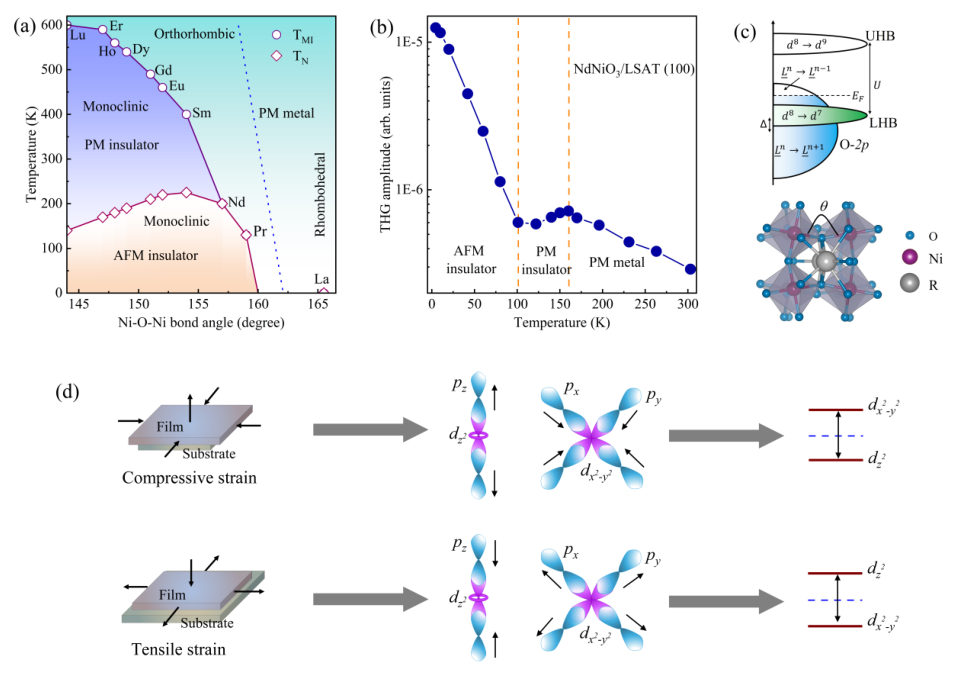
<figcaption class="paper-figure-caption"><b>Fig 1.</b> FIG. 1. (a) Phase-diagram of bulk RNiO3 as a function of Ni-O-Ni bond angle corresponding to</figcaption>
</figure>
<figure class="paper-figure-card">
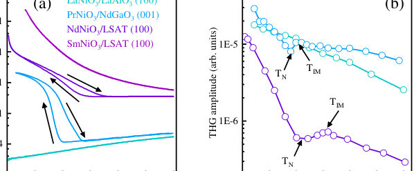
<figcaption class="paper-figure-caption"><b>Fig 2.</b> FIG. 2. (a) Temperature-dependent resistivity of different RNiO3 films. Arrows show heating and</figcaption>
</figure>
<figure class="paper-figure-card">
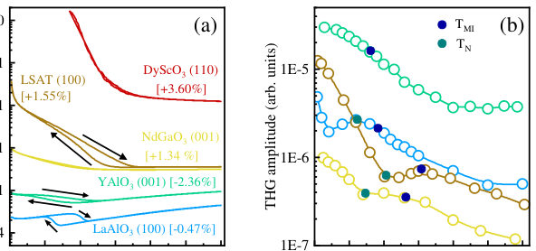
<figcaption class="paper-figure-caption"><b>Fig 3.</b> FIG. 3. (a) Temperature-dependent resistivity of NdNiO3 films grown on various substrates. The</figcaption>
</figure>
<figure class="paper-figure-card">

<figcaption class="paper-figure-caption"><b>Fig 4.</b> Figure 3(b) shows the temperature-dependent THG amplitude of these films. We did not</figcaption>
</figure>
<figure class="paper-figure-card">
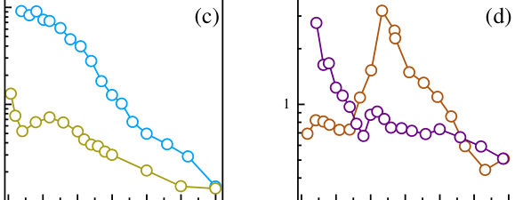
<figcaption class="paper-figure-caption"><b>Fig 5.</b> FIG. 4. Temperature-dependent resistivity of (a) NdNiO3/LaAlO3 (compressive strained) films</figcaption>
</figure>
</div>

<p><strong>Summary.</strong> This work demonstrates that Terahertz High Harmonic Generation (THG) is a powerful diagnostic tool for probing the complex phase transitions within rare-earth nickelates, which are model systems for Mott insulators. By measuring THG as a function of temperature and strain, the authors show a direct correlation between the nonlinear optical response and the material's electronic/magnetic state. This broadens the applicability of THz HHG studies to strongly correlated materials.</p>
<p><strong>Why it may be interesting.</strong> The use of nonlinear optical techniques like THz HHG to map out complex many-body phase diagrams in correlated oxides provides an experimental handle on phenomena typically studied via transport or spectroscopy alone. The sensitivity to subtle changes in electronic structure makes it valuable for understanding strongly interacting electron systems.</p>
<details>
<summary>Detailed structure</summary>
<p><strong>Main problem.</strong> The study investigates nonlinear electronic responses, specifically Terahertz High Harmonic Generation (THG), as a sensitive probe for understanding the Mott insulator-metal transition in strongly correlated materials.</p>
<p><strong>Main result.</strong> The THG amplitude is highly sensitive to the electronic and magnetic phases of rare-earth nickelates; local extrema in temperature-dependent THG coincide with known phase transitions like the insulator-metal crossover.</p>
<p><strong>Method.</strong> The research combines experimental measurements (temperature-dependent THG/resistivity on thin films) with theoretical modeling using generalized theories for harmonic generation in charge-transfer insulators.</p>
<p><strong>Model / system.</strong> The system is rare-earth nickelates (RNiO3), which are modeled as negative charge-transfer insulators exhibiting strong hybridization between Ni 3d and O 2p orbitals. The physics is governed by the competition between electronic correlations, magnetic ordering (AFM/PM), and structural parameters like the Ni-O-Ni bond angle.</p>
<p><strong>Key observables.</strong> THz third harmonic generation (THG) amplitude vs. Temperature; Resistivity vs. Temperature; THG/FH ratio.</p>
<p><strong>Important parameters / regimes.</strong> Rare-earth atomic radius (controlling $ ext{Ni}-    ext{O}- ext{Ni}$ bond angle); Epitaxial strain (compressive/tensile); Transition temperatures ($T_{MI}, T_N$).</p>
<p><strong>Assumptions / limitations.</strong> The THG signal is assumed to be a direct probe of the electronic structure and charge dynamics, allowing for mapping of phase transitions. The theory developed applies to negative charge-transfer insulators.</p>
<p><strong>Figures summary.</strong> Figures illustrate the RNiO3 phase diagram based on bond angle; temperature dependence plots show THG amplitude coinciding with magnetic and metal-insulator transition temperatures in both bulk and strained film samples.</p>
<p><strong>Paper structure.</strong> The paper establishes the utility of THz HHG for correlated materials, details measurements across various nickelate phases (varying R element, strain), presents how THG signals track phase transitions ($T_{MI}, T_N$), develops a generalized theory, and concludes by outlining enhancement strategies.</p>
</details>
<details>
<summary>Abstract</summary>
<p>High harmonic generation (HHG) is a sensitive probe for investigating electronic structures and dynamics of materials and a source for attosecond pulses. In particular, HHG with terahertz (THz) light can enable probing of nonlinear responses in correlated materials arising from low-energy many-body interactions. However, THz HHG studies have so far largely focused on topological materials and superconductors, leaving out other potential material systems which could also become efficient THz HHG sources. Here, we report THz third harmonic generation (THG) in rare-earth nickelates -- a prototype material for exploring the Mott insulator-metal transition and related technological applications. We find that the THG amplitude is highly sensitive to the strengths of electronic and magnetic phases of nickelates. In films with sharp phase-transitions, the local maximum and minimum in the temperature-dependent THG amplitude coincide with insulator-metal and magnetic transition temperatures, respectively. While in films with weaker transitions, these features shift toward lower temperatures or even monotonous THG enhancement is observed down to low temperatures. We developed a generalized theory for THz harmonic generation in negative charge-transfer insulators and outlined strategies to enhance the THz nonlinearities further. Our study broadens the scope of THz HHG studies and related applications to strongly correlated materials.</p>
</details>
<p><sub><a href="#top">↑ back to top</a></sub></p>

<p><a id="paper-2606.09201"></a></p>
<h3 id="order-parameters-and-ground-state-phase-diagram-of-the-interacting-topological-su-schrieffer-heeger-model-with-extended-range-hoppings"><a href="http://arxiv.org/abs/2606.09201v1">Order parameters and ground-state phase diagram of the interacting topological Su-Schrieffer-Heeger model with extended-range hoppings</a></h3>
<p><strong>Authors:</strong> Tsz Hin Hui, Pedro D. Sacramento, Wing Chi Yu<br>
<strong>Type:</strong> theory · <strong>Category:</strong> strongly correlated electrons · <strong>PDF:</strong> <a href="https://arxiv.org/pdf/2606.09201v1">https://arxiv.org/pdf/2606.09201v1</a><br>
<strong>Analysis basis:</strong> full PDF text, analyzed in chunks
<strong>Topic relevance:</strong> <code>analog quantum simulation</code> <strong>3/5</strong> · <code>entanglement &amp; information structure</code> <strong>2/5</strong> · <code>Frenkel-Kontorova</code> <strong>1/5</strong> · <code>Keldysh / 2PI / non-Gaussian methods</code> <strong>1/5</strong> · <code>methods for driven-dissipative</code> <strong>1/5</strong></p>
<div class="figure-strip-hint">↔ Scroll figures horizontally</div>
<div class="paper-figures-scroll">
<figure class="paper-figure-card">
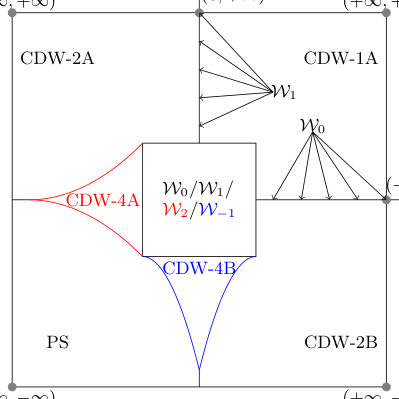
<figcaption class="paper-figure-caption"><b>Fig 1.</b> FIG. 1. Schematic diagram illustrating possible phases in var- ious limits of (U, V ). In the strong interacting regime, for any finite η, tc and td, the four phases reside at the four corners are phase separation (PS) for (U, V ) →(−∞, −∞), and dif- ferent types of charge density waves (CDWs), as detailed in the main text, for (±∞, ∓∞) and (+∞, +∞). Along the line (U, V ) ≈(λ, 0) and (0, λ), for sufficiently large λ &gt; 0, there exists a W0 and a W1 phase, respectively, as indicated by the arrows. The central square represents the neighborhood of (U, V ) ≈(0, 0), which admits four possibilities depending on the values of η, tc and td. For |tc| and |td| sufficiently smaller than |ta| and...</figcaption>
</figure>
<figure class="paper-figure-card">
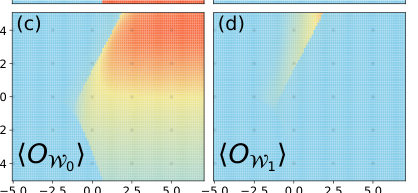
<figcaption class="paper-figure-caption"><b>Fig 2.</b> FIG. 3. Ground-state expectation values of O′ W0, O′ W1, OW0, and OW1, defined in Eqs. (43), (44), (9) and (25), respec- tively. The number of hopping terms is set to n = 3 for all the OPs. Here, N = 8 and (η, tc, td) = (0.6, 0, 0). For com- parison, see the phase diagram in Ref. [71].</figcaption>
</figure>
<figure class="paper-figure-card">
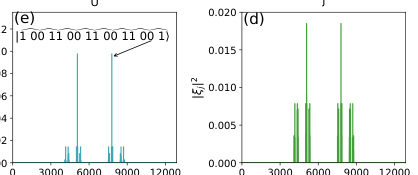
<figcaption class="paper-figure-caption"><b>Fig 3.</b> FIG. 2. The squared modulus of the weight |ξj|2 (see Eq. (5)) of the Fock states for ground states along U = 6 with (a) V = 5; (b) V = 2.5; (c) V = 0; (d) V = −2.5; (e) V = −5. The colormap shows the half-block entanglement entropy, with the circles marking the points at which the ground state is considered in panels (a-e) using the same color scheme. Here, N = 8 and (η, tc, td) = (0.6, 0, 0).</figcaption>
</figure>
<figure class="paper-figure-card">
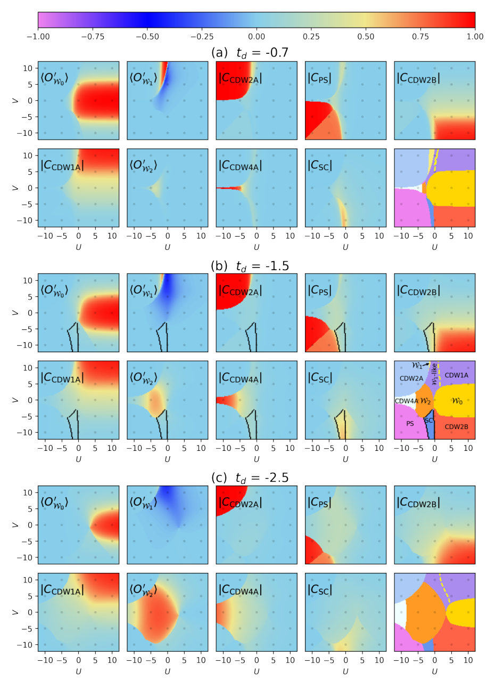
<figcaption class="paper-figure-caption"><b>Fig 4.</b> FIG. 4. The OPs for the possible phases in the interacting ESSH model with various td: (a) td = −0.7; (b) td = −1.5; and (c) td = −2.5. Here, N = 8, (η, tc) = (0.6, 0). O′ W0/1/2 are defined in Eq. (45), with n = 3. Cm(r) is defined in Eq. (47), and “m” can be CDW1A/2A/2B/4A or SC or PS. For the CDW family, r is set as halve of the wavelength of the corresponding phase, namely r = 1 for CDW2A/2B and r = N/2 for PS. For CDW1A, r = 0.5, which corresponds to a separation of one site. For the SC-like phase, we set r = 1 and OSC is given in Eq. (54). The bottom-right panel in each subplot shows the estimated phase diagram. The yellow dashed line display the boundary between the W1-like and the...</figcaption>
</figure>
<figure class="paper-figure-card">
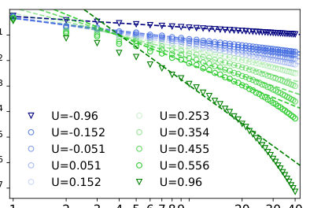
<figcaption class="paper-figure-caption"><b>Fig 5.</b> FIG. 5. The log-log plot of the pairing correlation function in Eq. (55) versus the separation r measured from the middle of the chain. Blue and green markers denote the SC-like and the CDW-2B phases, respectively, with U values indicated in the legend and (η, tc, td, V ) = (0.6, 0, −1.5, −12). Triangular and circular markers denote points deep inside the phase and around the phase boundary, respectively. Data is obtained from DMRG simulation with N = 200, open boundary con- dition, bond dimension 500, and at least 10 sweeps. Dashed straight lines are linear fits to the data over r ∈[6, 25].</figcaption>
</figure>
</div>

<p><strong>Summary.</strong> This paper maps out the complex ground-state phase diagram of an extended and interacting SSH model. It identifies multiple novel CDW and SC-like phases by deriving specific order parameters for each regime. The work is significant because it shows that electron interactions fundamentally alter the nature of topological order, allowing for hoppings patterns forbidden in the non-interacting limit.</p>
<p><strong>Why it may be interesting.</strong> The study uses advanced many-body techniques to characterize topological phases in interacting systems, providing insights into how electron-electron interactions modify fundamental superconducting or charge ordering tendencies.</p>
<details>
<summary>Detailed structure</summary>
<p><strong>Main problem.</strong> The study investigates the rich phase diagram of the interacting topological Su-Schrieffer-Heeger (ESSH) model, focusing on superconducting-like and charge-density-wave phases.</p>
<p><strong>Main result.</strong> The paper uncovers a complex phase diagram featuring multiple CDW and SC-like phases, demonstrating that interactions allow for non-unidirectional hoppings contrary to the non-interacting case.</p>
<p><strong>Method.</strong> Order parameters (OPs) are derived based on analyzing dominant Fock states of the ground state, and these results are verified using large-system simulations like DMRG.</p>
<p><strong>Model / system.</strong> The system is the Extended SSH Model (ESSH), described by a Hamiltonian including nearest-neighbor, next-nearest neighbor hoppings, and interaction terms ($U$ and $V$).</p>
<p><strong>Key observables.</strong> Order Parameters (OPs) for various phases ($   ext{OCDW2A}$, $ ext{CSC}$), Topological invariant ($W$), Entanglement entropy, and Fidelity.</p>
<p><strong>Important parameters / regimes.</strong> Interaction strengths ($U, V$), extended-range hopping parameters ($t_c, t_d$), and system size ($N$).</p>
<p><strong>Assumptions / limitations.</strong> The OP construction relies on analyzing dominant Fock states; finite-size effects are noted as a limitation for certain phases.</p>
<p><strong>Figures summary.</strong> Figures illustrate phase diagrams in the $(U, V)$ plane, compare OPs with entanglement entropy and fidelity across different system sizes, and show symmetry relations between parameter regimes.</p>
<p><strong>Paper structure.</strong> The work progresses by defining the Hamiltonian, deriving general OP construction schemes, mapping out the phase diagram through limiting cases of interaction parameters, and finally verifying the results using large-scale numerical simulations (DMRG).</p>
</details>
<details>
<summary>Abstract</summary>
<p>Topological insulators have attracted numerous attentions recent years, where the Su-Schrieffer-Heeger (SSH) model is one of the most studied models. While the interacting version of it has been explored recently, the interplay between interactions and long-range hoppings merit further investigations. In this work, we uncover a rich phase diagram of the interacting SSH model with extended-range hoppings, in which it consists of several topological phases, two novel superconducting-like (SC-like) phases and five distinct charge-density-wave (CDW) phases. We substantiate that the SC-like and two CDW phases are direct consequences of imbalanced interactions and extended-range hoppings. We derive the order parameters (OPs) for each of the phases and verify them in large-system simulations, finding consistency with the entanglement entropy and the fidelity in capturing the phase transitions. In contrast to the non-interacting case where the favored hoppings are unidirectional in the topological phases, the derived OPs suggest non-unidirectional hoppings are possible under the influence of interactions.</p>
</details>
<p><sub><a href="#top">↑ back to top</a></sub></p>

<p><a id="paper-2606.08929"></a></p>
<h3 id="quantum-mechanical-studies-of-photodissociation-dynamics-on-quantum-computers"><a href="http://arxiv.org/abs/2606.08929v1">Quantum Mechanical Studies of Photodissociation Dynamics on Quantum Computers</a></h3>
<p><strong>Authors:</strong> Zikun Zhuang, Chengdong Yang, Yuchen Wang, Dong H. Zhang, Bin Zhao<br>
<strong>Type:</strong> theory · <strong>Category:</strong> quantum information and computing · <strong>PDF:</strong> <a href="https://arxiv.org/pdf/2606.08929v1">https://arxiv.org/pdf/2606.08929v1</a><br>
<strong>Analysis basis:</strong> full PDF text, analyzed in chunks
<strong>Topic relevance:</strong> <code>methods for driven-dissipative</code> <strong>3/5</strong> · <code>non-equilibrium dynamics</code> <strong>2/5</strong> · <code>Keldysh / 2PI / non-Gaussian methods</code> <strong>1/5</strong> · <code>correlated / nonlocal dissipation</code> <strong>1/5</strong> · <code>driven-dissipative phase transition</code> <strong>1/5</strong></p>
<div class="figure-strip-hint">↔ Scroll figures horizontally</div>
<div class="paper-figures-scroll">
<figure class="paper-figure-card">
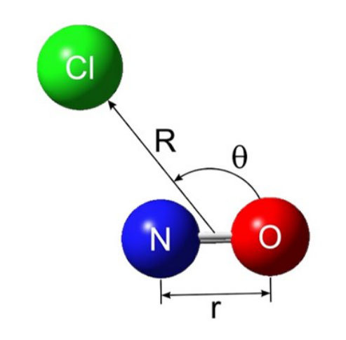
<figcaption class="paper-figure-caption"><b>Fig 1.</b> Figure 1: Jacobi coordinate system (r, R, θ) used for the triatomic NOCl molecule. Here, r represents the NO bond length, R is the distance from the Cl atom to the center of mass of the NO fragment, and θ is the angle between the vectors r and R.</figcaption>
</figure>
<figure class="paper-figure-card">
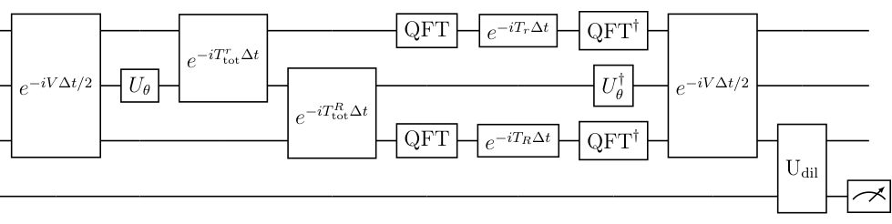
<figcaption class="paper-figure-caption"><b>Fig 2.</b> Figure 2: Quantum circuit for a single propagation step ∆t. The circuit implements the second-order split-operator method, utilizing the Quantum Fourier Transform (QFT) and Legendre-DVR transformation (Uθ) to switch between the DVR and FBR. The non-unitary complex absorbing potential is implemented via the dilation unitary Udil, which requires an additional ancilla qubit |0⟩a.</figcaption>
</figure>
<figure class="paper-figure-card">
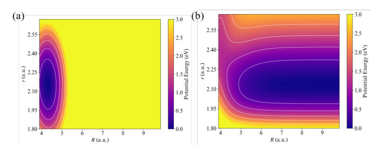
<figcaption class="paper-figure-caption"><b>Fig 3.</b> Figure 4: Two-dimensional contour plots of the potential energy surfaces (PESs) for NOCl as a function of the radial coordinates R and r, with the Jacobi angle fixed at its equilibrium value of θ = 127◦. (a) The ground electronic state (S0) PES. (b) The first excited electronic state (S1) PES. Energy values are given in electron volts (eV).</figcaption>
</figure>
<figure class="paper-figure-card">
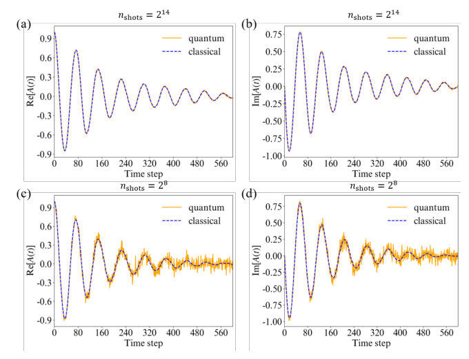
<figcaption class="paper-figure-caption"><b>Fig 4.</b> Figure 5: Comparison of the auto-correlation function C(t) for the 3D NOCl photodis- sociation process between quantum simulations (orange solid lines) and classical TDWP benchmarks (blue dashed lines). Panels (a) and (b) display the real and imaginary parts obtained from an ideal quantum simulation with 214 shots. Panels (c) and (d) display the corresponding results obtained with a reduced sampling size of 28 shots, illustrating the im- pact of statistical fluctuations.</figcaption>
</figure>
<figure class="paper-figure-card">
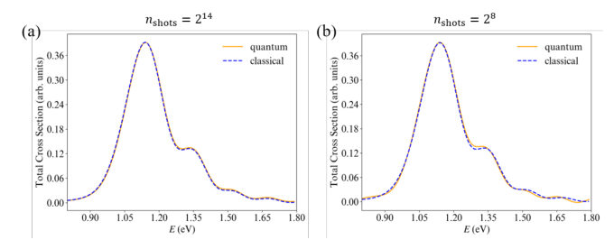
<figcaption class="paper-figure-caption"><b>Fig 5.</b> Figure 6: Comparison of the calculated total photodissociation cross sections σtot(E) for the 3D NOCl model. (a) Spectrum derived from the ideal 214 shots simulation. (b) Spectrum derived from the 28 shots simulation. Despite the significant sampling error in the time domain, the essential spectral features are well-preserved after the Fourier transform.</figcaption>
</figure>
</div>

<p><strong>Summary.</strong> The paper presents a novel quantum algorithm designed to simulate the complex dynamics of molecular photodissociation on quantum computers. It tackles the challenge of implementing non-unitary time propagation using a dilation scheme for boundary conditions. The results confirm that this approach is robust enough to yield accurate physical observables, like the dissociation cross section, even when accounting for noise and limited sampling.</p>
<p><strong>Why it may be interesting.</strong> This work directly addresses a major hurdle in applying quantum computation to chemistry: simulating open or dissipative quantum systems, which typically require non-unitary evolution operators.</p>
<details>
<summary>Detailed structure</summary>
<p><strong>Main problem.</strong> Studying complex quantum dynamics, such as photodissociation, which are intractable for classical computers due to exponential scaling.</p>
<p><strong>Main result.</strong> The proposed quantum algorithm successfully simulates the NOCl photodissociation cross section with excellent agreement to classical benchmarks, demonstrating robustness against both statistical sampling errors and simulated hardware noise.</p>
<p><strong>Method.</strong> The time evolution is implemented using a split-operator method on a quantum circuit, requiring a dilation strategy to handle non-unitary propagators arising from complex absorbing potentials (CAPs).</p>
<p><strong>Model / system.</strong> The system modeled is the photodissociation of the NOCl molecule. The dynamics are governed by a Hamiltonian involving kinetic and potential energy terms in Jacobi coordinates.</p>
<p><strong>Key observables.</strong> Photodissociation cross section ($\sigma_{tot}(E)$), extracted via the Fourier transform of the time-domain auto-correlation function $C(t)$.</p>
<p><strong>Important parameters / regimes.</strong> The simulation uses a 3D representation (R, r, $    heta$) for NOCl, with specific grid sizes and CAP parameters defined for the calculation.</p>
<p><strong>Assumptions / limitations.</strong> The primary approximation is using quantum computing to simulate dynamics that require non-unitary evolution due to boundary condition enforcement via a Complex Absorbing Potential (CAP).</p>
<p><strong>Figures summary.</strong> Figures compare the time-domain auto-correlation function $C(t)$ and the resulting cross section $\sigma_{tot}(E)$ under ideal conditions versus those corrupted by limited sampling shots or simulated hardware noise.</p>
<p><strong>Paper structure.</strong> The paper introduces the problem of intractable quantum dynamics, details the adaptation of the split-operator method for quantum circuits (including handling non-unitary CAPs via dilation), and validates the algorithm's performance by comparing results against classical benchmarks under various error conditions.</p>
</details>
<details>
<summary>Abstract</summary>
<p>Theoretical quantum dynamics calculations scale deeply with system size, rendering classical calculations intractable for complex systems. While quantum computing offers a natural solution, its application to nuclear quantum dynamics remains scarce. Here, we present a quantum algorithm to study photodissociation dynamics on quantum computers, benchmarked on the NOCl molecule. The wavefunction is propagated via a split-operator method, utilizing the Quantum Fourier Transform and unitary transformation matrix to switch representations. To impose outgoing boundary conditions on a truncated grid, we use a non-unitary absorbing potential propagator, implemented through a dilation scheme. The photodissociation cross section is calculated from the auto-correlation function, which is extracted using the Hadamard test. Our quantum computing results agree well with benchmarks under ideal conditions, and we further demonstrate that the algorithm is robust to noise and statistical sampling errors, indicating the promising application of noisy devices to quantum dynamics studies.</p>
</details>
<p><sub><a href="#top">↑ back to top</a></sub></p>

<p><a id="paper-2606.09384"></a></p>
<h3 id="classical-stochasticity-using-quantum-computers"><a href="http://arxiv.org/abs/2606.09384v1">Classical Stochasticity Using Quantum Computers</a></h3>
<p><strong>Authors:</strong> Diego Campos, Narasimha Reddy Gosala, Arundhati Dasgupta<br>
<strong>Type:</strong> theory · <strong>Category:</strong> quantum information and computing · <strong>PDF:</strong> <a href="https://arxiv.org/pdf/2606.09384v1">https://arxiv.org/pdf/2606.09384v1</a><br>
<strong>Analysis basis:</strong> full PDF text, analyzed in chunks
<strong>Topic relevance:</strong> <code>quantum measurements</code> <strong>3/5</strong> · <code>measurement-induced transitions</code> <strong>2/5</strong> · <code>methods for driven-dissipative</code> <strong>1/5</strong> · <code>non-equilibrium dynamics</code> <strong>1/5</strong></p>
<div class="figure-strip-hint">↔ Scroll figures horizontally</div>
<div class="paper-figures-scroll">
<figure class="paper-figure-card">
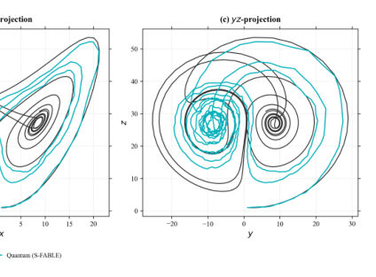
<figcaption class="paper-figure-caption"><b>Fig 1.</b> Figure 1: Lorenz trajectory generated by S-FABLE and measurement of quantum state</figcaption>
</figure>
<figure class="paper-figure-card">
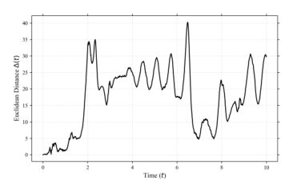
<figcaption class="paper-figure-caption"><b>Fig 2.</b> Figure 2: Plot of the Euclidean distance of the SFABLE q-code solution and numerical solution.</figcaption>
</figure>
<figure class="paper-figure-card">
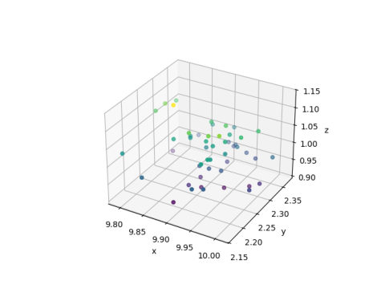
<figcaption class="paper-figure-caption"><b>Fig 3.</b> Figure 3: The Quantum Algorithm generated trajectories</figcaption>
</figure>
<figure class="paper-figure-card">
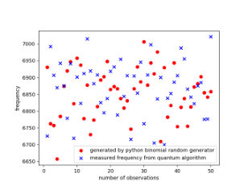
<figcaption class="paper-figure-caption"><b>Fig 4.</b> Figure 4: The randomness in the Quantum measurements</figcaption>
</figure>
<figure class="paper-figure-card">
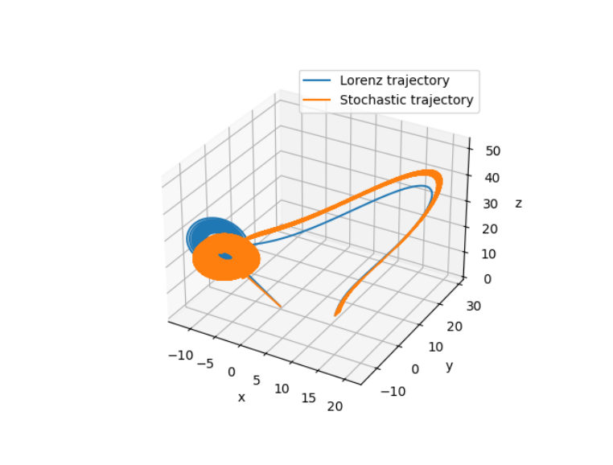
<figcaption class="paper-figure-caption"><b>Fig 5.</b> Figure 5: Numerically generated Lorenz trajectories, one with the stochastic fluctuations, one without them</figcaption>
</figure>
</div>

<p><strong>Summary.</strong> This paper demonstrates that the measurement process of quantum algorithms can naturally generate stochastic results capable of modeling classical chaotic and stochastic systems, using the Lorenz system as a key example. By comparing quantum measurements to classical simulations, the authors show that quantum hardware can serve as an alternative computational tool for studying non-deterministic physical phenomena.</p>
<p><strong>Why it may be interesting.</strong> It suggests a novel computational paradigm where inherent quantum non-determinism can be harnessed to model complex, classically stochastic physical systems without relying solely on post-processing or high-precision deterministic methods.</p>
<details>
<summary>Detailed structure</summary>
<p><strong>Main problem.</strong> The research explores modeling classical stochastic simulations using quantum algorithms, leveraging the inherent randomness of the quantum measurement process.</p>
<p><strong>Main result.</strong> The measured output from quantum algorithms applied to systems like the Lorenz equations naturally exhibits stochastic behavior that mirrors classical stochastic trajectories.</p>
<p><strong>Method.</strong> The study compares classical stochastic simulations (using Python RNG) with results obtained by evolving quantum states using specialized circuits (like FABLE) and interpreting the measurement probabilities as random variables.</p>
<p><strong>Model / system.</strong> The primary model is the Lorenz system, a non-linear ODE used to simulate complex fluid dynamics. The simulation involves encoding this system into quantum circuits for time evolution.</p>
<p><strong>Key observables.</strong> Stochastic trajectories (e.g., $y$-values), variance of measured frequencies, and Euclidean distances between simulated solutions.</p>
<p><strong>Important parameters / regimes.</strong> The stochastic nature itself is the focus; parameters include circuit depth, number of shots used for measurement, and error thresholds ($\epsilon_{	ext{cutoff}}$).</p>
<p><strong>Assumptions / limitations.</strong> It assumes that interpreting the quantum measurement outcome as a random variable provides an accurate model for classical stochasticity. The multinomial approximation is used when analyzing variance.</p>
<p><strong>Figures summary.</strong> Figures compare measured quantum output against deterministic and classically simulated stochastic trajectories, and show statistical consistency between quantum measurements and binomial/multinomial distributions.</p>
<p><strong>Paper structure.</strong> The paper introduces the problem of modeling classical stochasticity with quantum mechanics. It details implementing the Lorenz system evolution using quantum circuits (FABLE/Unitary) and compares the measurement statistics against classical RNG outputs to demonstrate equivalence in stochastic nature.</p>
</details>
<details>
<summary>Abstract</summary>
<p>We suggest that quantum algorithms can be used to model classical stochastic simulations as the measurement process is inherently random. To illustrate, we solve the classical Lorenz system with stochastic behavior using a Python random number generator. We compare the classical stochasticity of the Lorenz system with the measured output of the system obtained using quantum algorithms.</p>
</details>
<p><sub><a href="#top">↑ back to top</a></sub></p>

<p><a id="paper-2606.08326"></a></p>
<h3 id="enabling-quantum-communication-in-ultra-large-scale-networks"><a href="http://arxiv.org/abs/2606.08326v1">Enabling quantum communication in ultra-large-scale networks</a></h3>
<p><strong>Authors:</strong> Filippo Radicchi<br>
<strong>Type:</strong> theory · <strong>Category:</strong> quantum information and computing · <strong>PDF:</strong> <a href="https://arxiv.org/pdf/2606.08326v1">https://arxiv.org/pdf/2606.08326v1</a><br>
<strong>Analysis basis:</strong> full PDF text, analyzed in chunks
<strong>Topic relevance:</strong> <code>entanglement &amp; information structure</code> <strong>3/5</strong> · <code>correlated / nonlocal dissipation</code> <strong>1/5</strong> · <code>methods for driven-dissipative</code> <strong>1/5</strong> · <code>non-equilibrium dynamics</code> <strong>1/5</strong></p>
<div class="figure-strip-hint">↔ Scroll figures horizontally</div>
<div class="paper-figures-scroll">
<figure class="paper-figure-card">
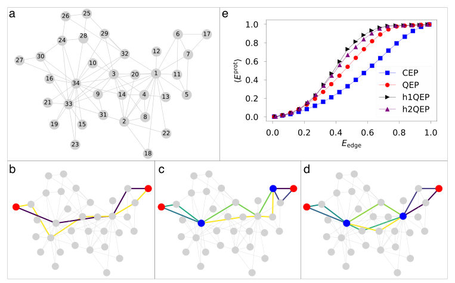
<figcaption class="paper-figure-caption"><b>Fig 1.</b> Figure 1. Quantum communication on a real network. (a) As an illustrative example, we consider the Zachary Karate Club’s network [52]. (b) We set the entanglement of the individual edges to Eedge = 0.60, then we apply the QEP protocol to establish a communication channel between the nodes s = 17 and t = 27, both highlighted in red. Edges utilized by the protocol are visualized with a color different from gray. In particular, all edges belonging to the same path selected by the QEP protocol have the same color. The resulting entanglement is EQEP s,t = 0.41. In this case, the CEP protocol selects the very same paths as QEP, however, the resulting entanglement is ECEP s,t = 0.12. (c) Same as...</figcaption>
</figure>
<figure class="paper-figure-card">
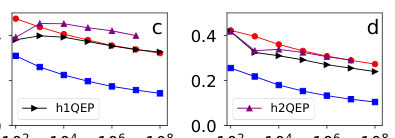
<figcaption class="paper-figure-caption"><b>Fig 2.</b> Figure 2. Quantum communication on synthetic networks. (a) We measure the Area Under the Curve [AUC, see Eq. (13)] for the vari- ous communication protocols on random graphs with power-law de- gree distribution K(k) ∼k−γ. The AUC metric is plotted as a function of the network size N for γ = 2.1. Results are averaged over mul- tiple instances of the network model, and many randomly selected pairs of nodes s and t, see SM for details. (b-d) Same as in (a), but for γ = 2.5, 3.5 and 4.5, respectively.</figcaption>
</figure>
<figure class="paper-figure-card">
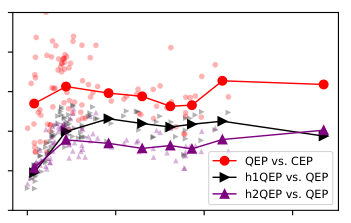
<figcaption class="paper-figure-caption"><b>Fig 3.</b> Figure 3. Quantum communication on real networks. We display with small red circles the relative improvement AUCQEP/AUCCEP −1 of QEP vs. CEP for 101 real networks. Each network is further char- acterized by a different level of degree heterogeneity ⟨k2⟩/⟨k⟩2 used as abscissa in the plot. To highlight the trend, we group data using logarithmic binning and display with large red circles median values for each of the bins. Black and purple triangles display analogous re- sults, but for the comparisons h1QEP vs. QEP and h2QEP vs. QEP, respectively.</figcaption>
</figure>
</div>

<p><strong>Summary.</strong> This paper develops novel quantum communication protocols designed to function across arbitrary, ultra-large-scale network topologies. By employing techniques like entanglement swapping and distillation, the authors prove that these protocols remain viable even in complex scale-free networks as they approach infinite size. The findings suggest a path toward realizing a functional Quantum Internet.</p>
<p><strong>Why it may be interesting.</strong> This work provides rigorous theoretical evidence for scaling quantum networking beyond idealized structures, which is crucial for designing future large-scale quantum infrastructure.</p>
<details>
<summary>Detailed structure</summary>
<p><strong>Main problem.</strong> The central problem is determining if quantum communication can be reliably sustained at ultra-large scales, comparable to the growth of a global Internet.</p>
<p><strong>Main result.</strong> The proposed specialized protocols, particularly $h_x	ext{QEP}$, are shown to maintain viable quantum communication in the thermodynamic limit for scale-free random graphs.</p>
<p><strong>Method.</strong> The authors devise and analyze a family of quantum communication protocols involving entanglement swapping and distillation, applying them systematically to arbitrary graph topologies.</p>
<p><strong>Model / system.</strong> The system is modeled as an abstract quantum network represented by a classical weighted graph where edge weights quantify the available entanglement. The analysis focuses on extending results beyond special topologies like regular lattices.</p>
<p><strong>Key observables.</strong> Achievable average entanglement ($\langle E_{	ext{prot}} 
angle$) and the Area Under the Curve (AUC) are used as primary performance metrics to compare protocols.</p>
<p><strong>Important parameters / regimes.</strong> The analysis considers varying edge entanglement ($E_{	ext{edge}}$), network size ($N$), redundancy ($k$), and geodesic distance ($\ell$).</p>
<p><strong>Assumptions / limitations.</strong> Previous work was limited to special topologies; the current approach assumes quantum operations can be mapped onto transformations on classical graph edges.</p>
<p><strong>Figures summary.</strong> Figure 1 illustrates protocol performance (QEP, $h_x	ext{QEP}$) on a small network (Karate Club). Figure 2 shows the decay of AUC for standard protocols on random graphs as N increases. Figure 3 compares protocol performance across various real networks based on degree heterogeneity.</p>
<p><strong>Paper structure.</strong> The paper systematically develops quantum communication protocols (QEP, CEP, $h_x	ext{QEP}$) by defining their underlying operations (swapping/distillation). It then analyzes these protocols theoretically and numerically on increasingly complex graph models to prove scalability in the thermodynamic limit.</p>
</details>
<details>
<summary>Abstract</summary>
<p>The recent development of small-scale quantum networks poses the question of whether such a technology could also operate at scale in the futuristic Quantum Internet. The question can be answered with a classical approach where an arbitrary quantum network is represented as a classical graph, and communication reliability is assessed using methods proper of network theory. Unfortunately, sufficient conditions for viable network-wide communication have been established only for special topologies like regular lattices. No practical communication protocols have been developed so far for real network topologies, if not for relatively small networks. Here, we overcome these limitations by devising a family of quantum communication protocols that can be applied to networks with arbitrary topology, composed of even hundreds of millions nodes. By performing a systematic analysis on both real and synthetic graphs, we show that the proposed protocols are sustainable on heterogeneous networks. For random scale-free graphs, we analytically prove that viable quantum communication persists in the thermodynamic limit. Our findings provide evidence that the Quantum Internet will be capable of sustaining a ultra-large-scale growth comparable to one already experienced by its classical predecessor.</p>
</details>
<p><sub><a href="#top">↑ back to top</a></sub></p>

<p><a id="paper-2606.09720"></a></p>
<h3 id="long-term-laser-frequency-stabilization-with-an-fpga-controlled-scanning-cavity"><a href="http://arxiv.org/abs/2606.09720v1">Long-term laser frequency stabilization with an FPGA-controlled scanning cavity</a></h3>
<p><strong>Authors:</strong> R. Forti, R. Panza, A. Muzi Falconi, S. Sbernardori, A. Vardé, M. Marinelli, A. Carini, F. Scazza<br>
<strong>Type:</strong> experiment · <strong>Category:</strong> other · <strong>PDF:</strong> <a href="https://arxiv.org/pdf/2606.09720v1">https://arxiv.org/pdf/2606.09720v1</a><br>
<strong>Analysis basis:</strong> full PDF text, analyzed in chunks
<strong>Topic relevance:</strong> <code>quantum measurements</code> <strong>3/5</strong> · <code>interference shaping light</code> <strong>1/5</strong> · <code>measurement-induced transitions</code> <strong>1/5</strong> · <code>quantum optics experiment</code> <strong>1/5</strong></p>
<div class="figure-strip-hint">↔ Scroll figures horizontally</div>
<div class="paper-figures-scroll">
<figure class="paper-figure-card">
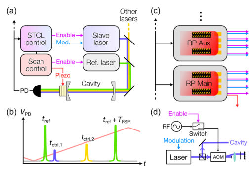
<figcaption class="paper-figure-caption"><b>Fig 1.</b> FIG. 1. Simplified scheme of the STCL system. (a) Block diagram of our STCL system. The STCL control block actuates on the frequency of a slave laser, gating at the same time its injection into the optical cavity. The connected scan control block handles the scanning of the cavity length, and gates the injection of the reference laser into the cavity. A photodetector (PD) measures the cavity transmission signal and supplies it to the STCL control block. (b) Illustration of the typical cavity transmission signal, alongside the piezo displacement ramp (red), for multiple injected lasers: reference laser (green) and controlled lasers (violet, yellow). Each laser beam is coupled into the cavity...</figcaption>
</figure>
<figure class="paper-figure-card">
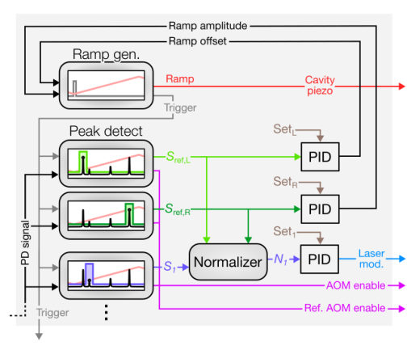
<figcaption class="paper-figure-caption"><b>Fig 2.</b> FIG. 2. Block diagram of the internal operations executed by the main FPGA device. The Red Pitaya provides the voltage ramp to the cavity piezo and reads the PD signal of the cavity transmission. This signal is processed to identify the position of the relevant peaks, which are stabilized by digital PID modules actuating on the cavity ramp and on the slave laser frequency. The position of the slave laser is referenced to the normalized distance between the two (L and R) reference peaks. The Red Pitaya also outputs triggers to synchronize the cavity scan and to gate the laser lights. Auxiliary Red Pitayas implement a similar scheme without the ramp generator and without feedback on the...</figcaption>
</figure>
<figure class="paper-figure-card">
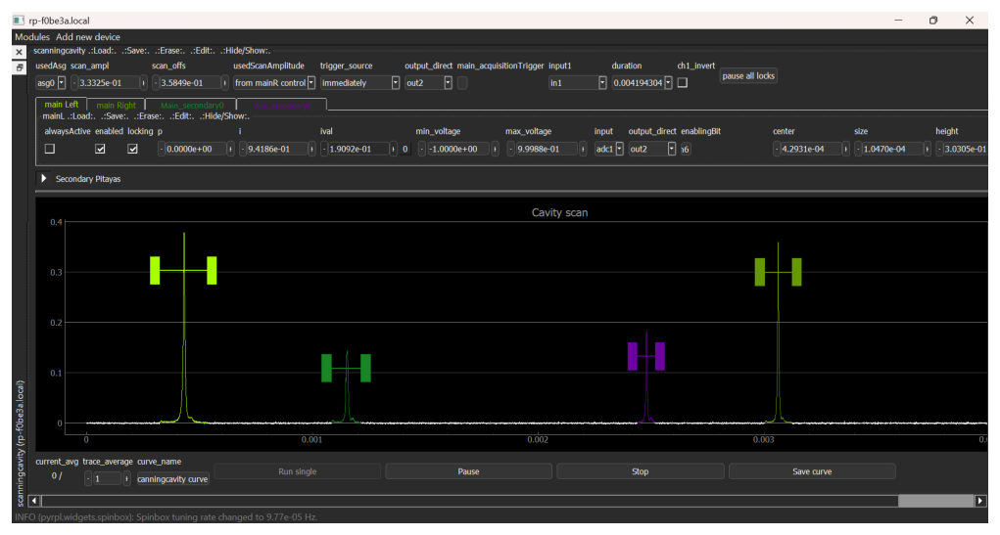
<figcaption class="paper-figure-caption"><b>Fig 3.</b> FIG. 3. Screenshot of the graphical user interface of the newly implemented ScanCavity module in PyRPL. The interface allows to control all parameters of the STCL procedure and to visualize the cavity transmission during the scan. Colored horizontal bars define the range during which each laser is coupled into the cavity: by coupling each beam only within its range, we avoid cross-talks between independent sources and detection of spurious peaks. Each laser is locked to the center of its range, which can be resized and repositioned manually by drag-and-drop, even while the locks are engaged. Each slave laser PID setpoint can also be precisely adjusted through keyboard input.</figcaption>
</figure>
<figure class="paper-figure-card">
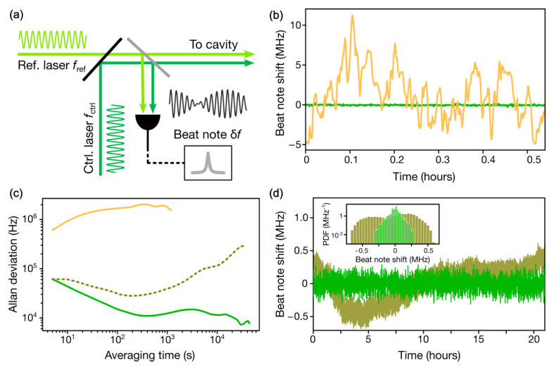
<figcaption class="paper-figure-caption"><b>Fig 4.</b> FIG. 4. Heterodyne measurements between reference and controlled lasers at 556 nm. (a) Sketch of the acquisition setup. The two laser beams are overlapped and interfered at a fast photodetector. (b) Comparison between beat note frequency deviations with the STCL control loop active (green) or inactive (orange). (c) Allan deviation of the acquired beat note frequency with the control loop active including the correction of scan drifts (solid green), excluding correction of the scan drifts (dashed olive) and inactive (solid orange). (d) Comparison between the closed-loop beat note stability over 20 hours with (green) and without (olive) active drift correction. The inset shows histograms of...</figcaption>
</figure>
<figure class="paper-figure-card">
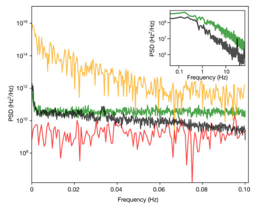
<figcaption class="paper-figure-caption"><b>Fig 5.</b> FIG. 5. Power spectral density (PSD) of the beat note frequency between reference and controlled lasers at 556 nm. Measurements for different settings of the STCL control are displayed: open loop (orange), closed loop with piezo-scanning (green), closed loop with AOM-scanning (red, see Section VI). The system noise floor in the piezo-scanning mode is also shown (black). Inset: a higher-frequency span of the PSD is shown, where the closed-loop piezo-scanning operation is compared to the noise floor across the ≃100 Hz control bandwidth.</figcaption>
</figure>
</div>

<p><strong>Summary.</strong> The paper details an advanced laser stabilization system using an FPGA-controlled Scanning Transfer Cavity Lock (STCL). By integrating cavity scanning and feedback actuation onto a single, low-latency digital platform, the authors achieved superior stability. The novel use of AOM modulation further boosts bandwidth, providing a highly practical and scalable tool for state-of-the-art cold-atom experiments.</p>
<p><strong>Why it may be interesting.</strong> This work represents a significant engineering advance in optical metrology for AMO physics. The integration of high-speed, low-latency FPGA control directly addresses practical limitations in scaling complex quantum experiments that rely on precise frequency referencing.</p>
<details>
<summary>Detailed structure</summary>
<p><strong>Main problem.</strong> The primary challenge addressed is achieving long-term, high-stability laser frequency stabilization for multiple sources simultaneously, while minimizing electronic latency limitations.</p>
<p><strong>Main result.</strong> The FPGA-controlled system demonstrated sub-MHz absolute frequency stability over several hours across a large spectral range and achieved significantly improved noise rejection by using AOM scanning over traditional piezo actuation.</p>
<p><strong>Method.</strong> The authors implemented a Scanning Transfer Cavity Lock (STCL) architecture, utilizing an FPGA to perform cavity scanning, peak detection, and feedback control in parallel. They enhanced this by replacing standard piezo scans with fast AOM-assisted frequency modulation for superior bandwidth.</p>
<p><strong>Model / system.</strong> The system uses a Fabry-Perot optical cavity whose length is scanned while multiple slave lasers are locked to the resonance peaks observed during the scan. The control electronics rely on an FPGA platform (Red Pitaya) running custom firmware, allowing for real-time processing of error signals.</p>
<p><strong>Key observables.</strong> Sub-MHz absolute frequency stability over hours; normalized peak positions ($N_i$); Allan deviation of the beat note frequency ($\delta f(t)$).</p>
<p><strong>Important parameters / regimes.</strong> Visible wavelength range ($\sim 150$ nm); long timescales (up to 20 hours); high bandwidth capability exceeding $100$ kHz.</p>
<p><strong>Assumptions / limitations.</strong> The system assumes that the cavity resonance width is sufficient for accurate peak detection, and environmental drifts (like air pressure) can be measured and compensated for via auxiliary sensors.</p>
<p><strong>Figures summary.</strong> Figures illustrate the STCL block diagram, the optical setup using AOM strobing, heterodyne beat note measurements comparing AOM vs. piezo scanning modes, and long-term stability plots derived from atomic spectroscopy.</p>
<p><strong>Paper structure.</strong> The paper details the theoretical basis of STCL, presents the FPGA implementation overcoming latency limits, validates performance through both heterodyne measurements (short/medium term) and atomic spectroscopy (long term), and concludes by highlighting the modularity and scalability of the AOM-enhanced architecture.</p>
</details>
<details>
<summary>Abstract</summary>
<p>We present an FPGA-based implementation of a scanning transfer cavity lock (STCL) for laser frequency stabilization, allowing for the simultaneous stabilization of multiple laser sources with respect to a single reference laser by means of a continuously scanned Fabry-Perot cavity. By exploiting the FPGA architecture to simultaneously perform cavity scanning, peak detection, and feedback actuation, we minimize latency and allow independent control loops for several lasers within a single device, offering direct scalability. The system performance is analyzed through heterodyne measurements from short ($<1\,$s) to long ($\sim20\,$hours) timescales. The end-to-end locking performance is validated through atomic spectroscopy of ytterbium atoms in a magneto-optical trap, demonstrating sub-MHz absolute frequency stability over several hours for the stability transfer across $\sim 150\,$nm in the visible-wavelength range. Importantly, we demonstrate a novel fast-scanning approach based on acousto-optic modulator (AOM) frequency modulation, enabled by the low detection latency of our FPGA implementation. This increases significantly the effective locking bandwidth and reduces the intrinsic noise of the system with respect to standard piezo-actuated scanning of the cavity length, allowing to reach sub-$100\,$kHz long-term stability and offering perspectives for laser-line narrowing. Owing to its modularity, low cost and ease of implementation within the open-source PyRPL firmware package for the STEMlab Red Pitaya platform, our architecture offers a compact and flexible alternative to existing STCL and locked-cavity implementations, providing a practical approach to the operation of a state-of-the-art cold-atom experiment without relying on any atomic references for laser stabilization.</p>
</details>
<p><sub><a href="#top">↑ back to top</a></sub></p>

<p><a id="paper-2606.09678"></a></p>
<h3 id="the-dynamic-488-floquet-code"><a href="http://arxiv.org/abs/2606.09678v1">The dynamic 4.8.8 Floquet code</a></h3>
<p><strong>Authors:</strong> Aliki A. Capatos<br>
<strong>Type:</strong> theory · <strong>Category:</strong> quantum information and computing · <strong>PDF:</strong> <a href="https://arxiv.org/pdf/2606.09678v1">https://arxiv.org/pdf/2606.09678v1</a><br>
<strong>Analysis basis:</strong> full PDF text, analyzed in chunks
<strong>Topic relevance:</strong> <code>non-equilibrium dynamics</code> <strong>3/5</strong> · <code>driven-dissipative phase transition</code> <strong>1/5</strong> · <code>methods for driven-dissipative</code> <strong>1/5</strong> · <code>non-equilibrium universality</code> <strong>1/5</strong></p>
<div class="figure-strip-hint">↔ Scroll figures horizontally</div>
<div class="paper-figures-scroll">
<figure class="paper-figure-card">
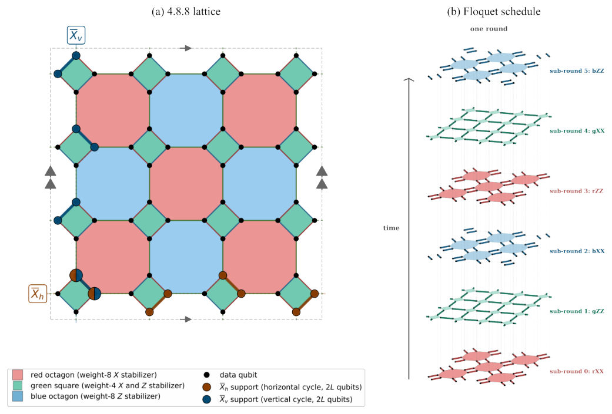
<figcaption class="paper-figure-caption"><b>Fig 1.</b> FIG. 1. (a): Part of the static 4.8.8 lattice on a torus. The data qubits (black dots) sit at the vertices of a {4, 8, 8} tiling of the torus. Faces are 3-coloured – red and blue octagons with green squares filling the gaps. Red/blue octagons support weight-8 plaquette stabilisers and green squares support weight-4 plaquette stabilisers. In the Floquet version of the code, the X/Z flavour is set dynamically by the schedule. The two non-contractible cycles Xh (horizontal) and Xv (vertical) are the two independent X-type logical operators. The corresponding Z-type logicals have the same support by CSS symmetry, giving k = 2 logical qubits encoded in n = 4L2 data qubits. The logicals shown...</figcaption>
</figure>
<figure class="paper-figure-card">
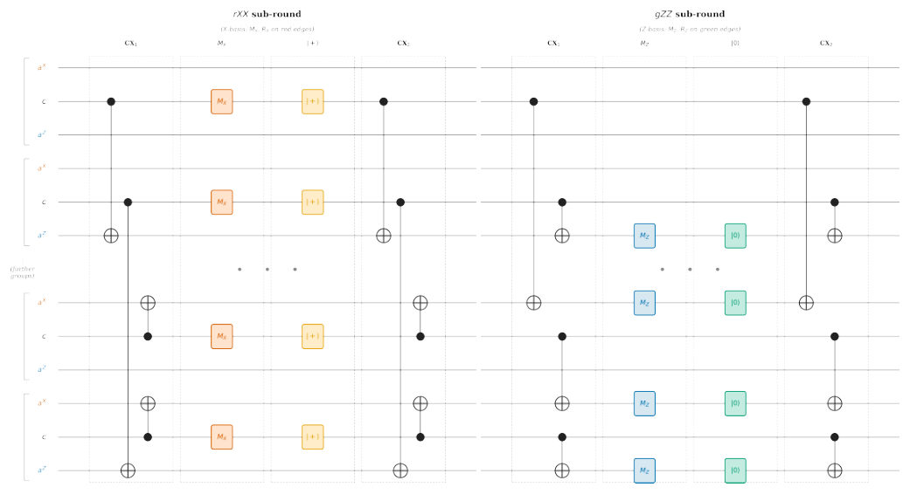
<figcaption class="paper-figure-caption"><b>Fig 2.</b> FIG. 2. Two consecutive sub-rounds of the reset dynamic 4.8.8 Floquet circuit. Both sub-rounds use the same 4-TICK CX −M −R −CX gadget, differing only in the basis. The left half (rXX) measures XX checks on every red edge, in the X basis. The right half (gZZ) measures ZZ checks on every green edge, in the Z basis. Because the data graph is bipartite and the two-colouring alternates which class is contracted, the measured (contracted) qubit changes between sub-rounds. In the rXX half, the central qubit c is measured with its red-edge neighbour aX as partner, while in the gZZ half, the green-edge neighbour aZ is measured with c now acting as its partner. Each three-wire group thus shows one...</figcaption>
</figure>
<figure class="paper-figure-card">
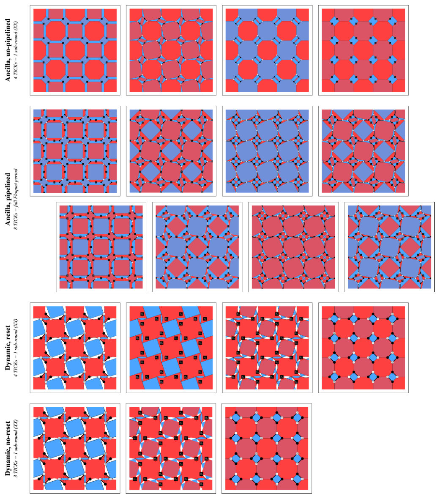
<figcaption class="paper-figure-caption"><b>Fig 3.</b> FIG. 3. One rXX sub-round (or, for the pipelined ancilla-based circuit, one full Floquet period) of each variant’s circuit of a part of the 4.8.8 lattice, showing the evolving stabiliser support. Each panel is one TICK. Stabilisers are coloured polygons, with blue for Z and red for X. For a full period, the un-pipelined ancilla-based and reset dynamic variants go through 24 TICKs total, the no-reset dynamic 18, and the pipelined ancilla-based variant only 8. For the full period of each variant, see here. Row 1 (ancilla-based, un-pipelined): one XX check measurement in four TICKs – R on the ancillas, CX1, CX2, M on the ancillas. Row 2 (ancilla-based, pipelined): one full Floquet period in 8...</figcaption>
</figure>
<figure class="paper-figure-card">
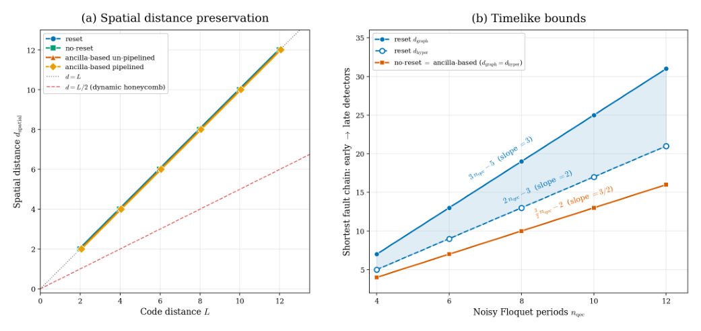
<figcaption class="paper-figure-caption"><b>Fig 4.</b> FIG. 4. (a): Spatial distance dspatial versus L for the four 4.8.8 variants. nwarmup = ntail = 2 and nqec = L. (b): Timelike- distance bounds for the four variants. The slope of this chain length versus nqec gives dt/nqec, the timelike distance per Floquet period [11]; one 4.8.8 period contains six sub-rounds. Filled markers and solid lines show dgraph, which ignores hyperedges and gives an upper bound on dt. The x-axis starts at 4 because fewer rounds introduce boundary effects.</figcaption>
</figure>
<figure class="paper-figure-card">
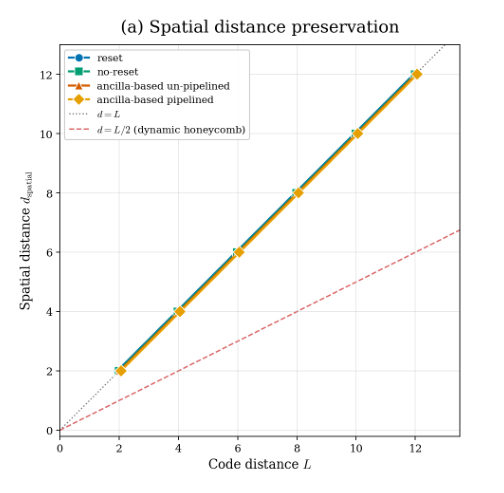
<figcaption class="paper-figure-caption"><b>Fig 5.</b> Figure 4(a) shows dspatial vs L for each variant. L is the linear size of the torus, where the code is de- fined on an L × L grid of square-octagon unit cells, giving n = 4L2 data qubits and k = 2 logical qubits. The distance d is the circuit-level distance, the small- est number of circuit errors that together cause an un- detected logical error. I confirm dspatial = L for all four variants using two independent methods on the noisy circuit. First, after dropping the non-local detec- tors (Appendix G), Stim’s shortest graphlike error returns the minimum-weight graphlike logical fault directly. I confirm this on both independent non-contractible X-cycles (horizontal and vertical). Second,...</figcaption>
</figure>
</div>

<p><strong>Summary.</strong> This paper rigorously compares four different circuit implementations for syndrome extraction in the 4.8.8 Floquet code to improve fault tolerance. By analyzing thresholds, distance preservation, and resource overheads, the authors demonstrate that dynamic circuits offer significant advantages over traditional ancilla-based methods. The 'no-reset' dynamic variant emerges as superior by maximizing error thresholds while maintaining desirable physical properties.</p>
<p><strong>Why it may be interesting.</strong> This work directly addresses hardware-level constraints in quantum computation by optimizing circuit depth and connectivity for topological codes, which is crucial for scaling up quantum processors.</p>
<details>
<summary>Detailed structure</summary>
<p><strong>Main problem.</strong> The research aims to optimize fault-tolerant quantum memory by designing superior syndrome extraction circuits for Floquet codes.</p>
<p><strong>Main result.</strong> Dynamic syndrome extraction methods, particularly the 'no-reset' variant, significantly improve error thresholds and reduce resource overhead compared to standard ancilla-based circuits without sacrificing code distance.</p>
<p><strong>Method.</strong> The authors compare four circuit implementations (ancilla-based vs. dynamic with/without reset) by simulating performance under depolarizing noise using techniques like Minimum-Weight Perfect-Matching decoding.</p>
<p><strong>Model / system.</strong> The study focuses on the 4.8.8 honeycomb Floquet code, which encodes two logical qubits on a torus lattice geometry ($L 	imes L$). The analysis involves comparing circuit-level metrics across different scheduling schemes.</p>
<p><strong>Key observables.</strong> Error threshold (per-round), spatial distance ($d_{	ext{spatial}}$), timelike distance ($rac{dt}{n_{  ext{qec}}}$), and spacetime volume ($V$).</p>
<p><strong>Important parameters / regimes.</strong> The linear size of the torus ($L$), physical error rate ($p$), and target logical error rates (e.g., $10^{-12}$).</p>
<p><strong>Assumptions / limitations.</strong> The analysis assumes nearest-neighbor measurements are sufficient, and specific hardware timing models are used for resource overhead comparisons.</p>
<p><strong>Figures summary.</strong> Figures illustrate the lattice structure, dynamic scheduling over sub-rounds, and comparative plots showing thresholds vs. error rates, as well as distance bounds ($  ext{dgraph}$ vs $   ext{dhyper}$) for different circuit variants.</p>
<p><strong>Paper structure.</strong> The paper systematically compares four syndrome extraction circuits (ancilla/pipelined vs. dynamic/reset) by first establishing the theoretical framework, then benchmarking performance metrics like threshold and distance, and finally comparing resource overheads using spacetime volume calculations.</p>
</details>
<details>
<summary>Abstract</summary>
<p>Fault-tolerant quantum memories depend on the syndrome extraction circuit as much as on the underlying code. Ancilla-free or dynamic circuits are an effective way to improve this circuit layer. For the 6.6.6 honeycomb Floquet code, making the circuit dynamic raises the threshold and lowers the qubit overhead, but at the cost of halving the spatial code distance. A dynamic construction for the 4.8.8 lattice layout was conjectured to preserve full distance. I confirm this and give a dynamic measurement circuit for the CSS 4.8.8 Floquet code. To benchmark it, I construct and compare four circuit-level implementations on a torus, including two dynamic variants (with and without mid-circuit resets), the standard ancilla-based circuit, and a pipelined ancilla-based circuit. Under circuit-level depolarising noise, the reset dynamic circuit reaches a per-round threshold of $0.463\%$ $(0.490\%)$ with MWPM (BP+matching), while the no-reset variant reaches the highest threshold of all four circuits at $0.512\%$ $(0.574\%)$. The standard ancilla-based circuit only achieves $0.228\%$ $(0.240\%)$, but the pipelined schedule reaches $0.478\%$ $(0.489\%)$. The reset dynamic circuit also has a faster-growing timelike distance, with $2\le d_t/n_{\mathrm{qec}}\le 3$ asymptotically against a tight $3/2$ for the other three, and running it for fewer rounds gives the smallest spacetime volume in the fast-reset regime, while the no-reset variant is smallest in the slow-reset regime. The 4.8.8 dynamic circuits therefore see the expected threshold gain and overhead reduction without the spatial-distance cost, demonstrating the advantage of dynamic syndrome extraction in Floquet codes.</p>
</details>
<p><sub><a href="#top">↑ back to top</a></sub></p>

<p><a id="paper-2606.09584"></a></p>
<h3 id="algebraic-kolmogorov-arnold-representation-theorem-for-quantum-measurement"><a href="http://arxiv.org/abs/2606.09584v1">Algebraic Kolmogorov--Arnold representation theorem for quantum measurement</a></h3>
<p><strong>Authors:</strong> Sviatoslav V. Dzhenzher<br>
<strong>Type:</strong> theory · <strong>Category:</strong> quantum information and computing · <strong>PDF:</strong> <a href="https://arxiv.org/pdf/2606.09584v1">https://arxiv.org/pdf/2606.09584v1</a><br>
<strong>Analysis basis:</strong> full PDF text, analyzed in chunks
<strong>Topic relevance:</strong> <code>quantum measurements</code> <strong>3/5</strong> · <code>entanglement &amp; information structure</code> <strong>1/5</strong> · <code>measurement-induced transitions</code> <strong>1/5</strong></p>
<div class="figure-strip-hint">↔ Scroll figures horizontally</div>
<div class="paper-figures-scroll">
<figure class="paper-figure-card">
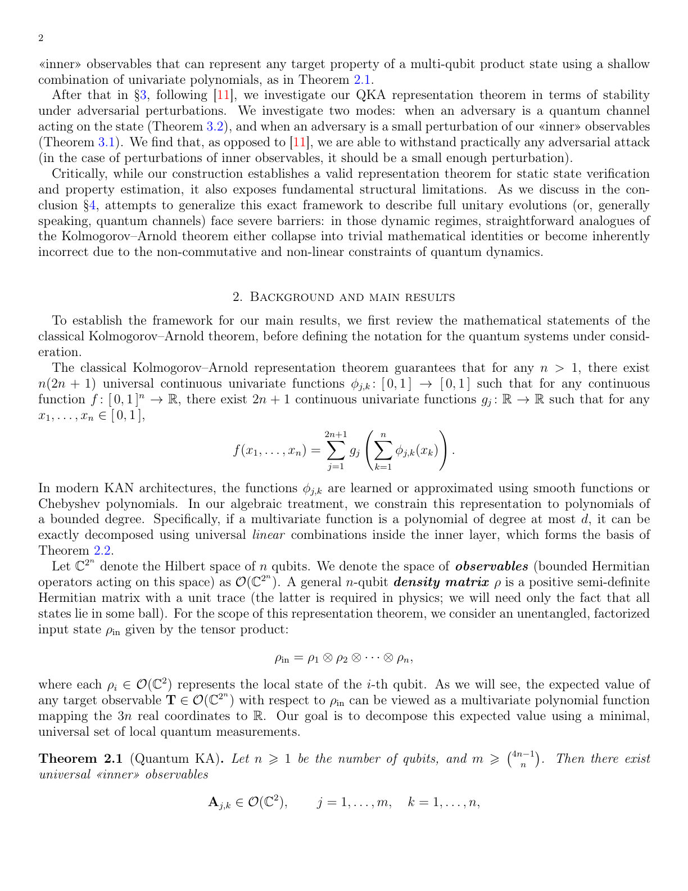
<figcaption class="paper-figure-caption"><b>Fig 1.</b> Low-resolution page preview, page 2</figcaption>
</figure>
<figure class="paper-figure-card">
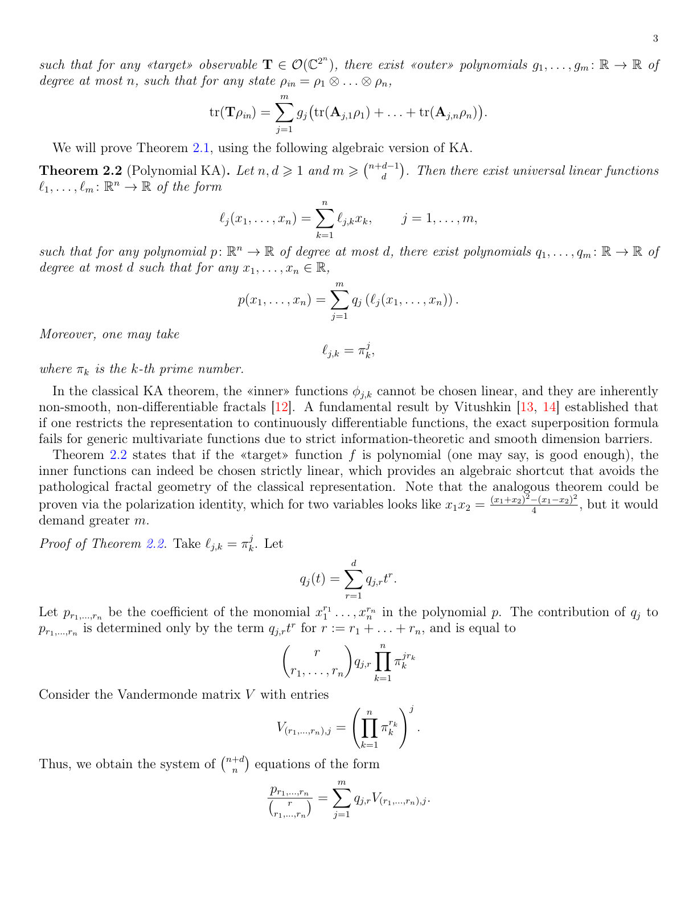
<figcaption class="paper-figure-caption"><b>Fig 2.</b> Low-resolution page preview, page 3</figcaption>
</figure>
<figure class="paper-figure-card">
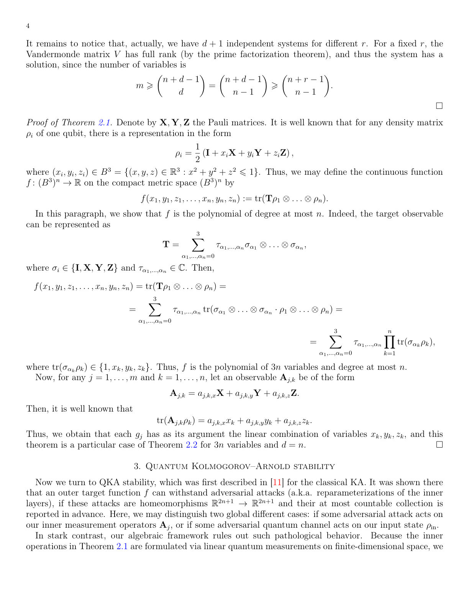
<figcaption class="paper-figure-caption"><b>Fig 3.</b> Low-resolution page preview, page 4</figcaption>
</figure>
<figure class="paper-figure-card">
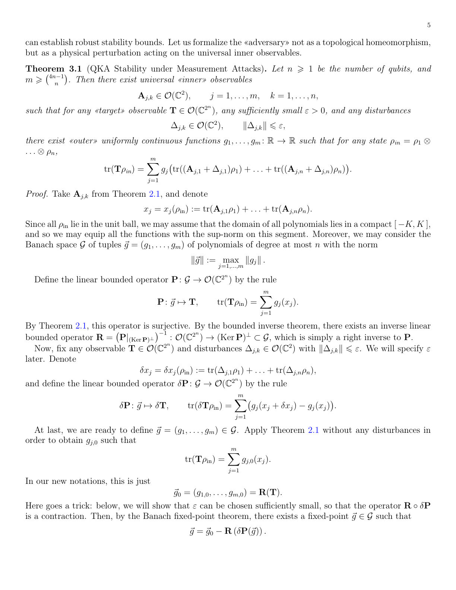
<figcaption class="paper-figure-caption"><b>Fig 4.</b> Low-resolution page preview, page 5</figcaption>
</figure>
<figure class="paper-figure-card">
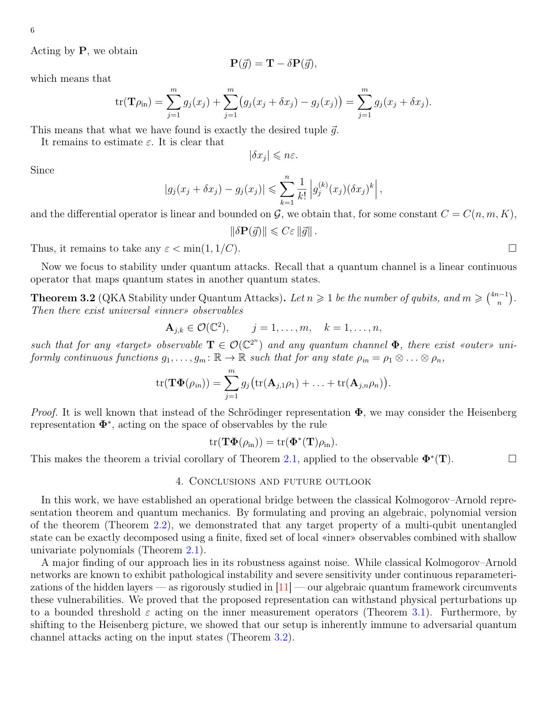
<figcaption class="paper-figure-caption"><b>Fig 5.</b> Low-resolution page preview, page 6</figcaption>
</figure>
</div>

<p><strong>Summary.</strong> The paper develops the Quantum Kolmogorov–Arnold (QKA) representation theorem, showing that measuring properties of unentangled multi-qubit states can be reduced to a sum involving local measurements and univariate polynomials. Crucially, this algebraic framework is proven to be stable against both physical noise and adversarial quantum attacks.</p>
<p><strong>Why it may be interesting.</strong> This work provides a powerful mathematical tool for characterizing complex expectation values in simple product states, offering insights into how classical decomposition theorems can be rigorously adapted to quantum measurement theory while maintaining stability guarantees.</p>
<details>
<summary>Detailed structure</summary>
<p><strong>Main problem.</strong> The paper establishes an operational framework connecting the classical Kolmogorov–Arnold (KA) representation theorem to quantum information theory by formulating a Quantum Kolmogorov–Arnold (QKA) representation for expectation values of observables.</p>
<p><strong>Main result.</strong> It proves that the expected value of a general observable on unentangled multi-qubit product states can be exactly decomposed using a finite set of local inner observables and shallow univariate polynomials, exhibiting stability against perturbations and quantum attacks.</p>
<p><strong>Method.</strong> The method adapts the polynomial version of the classical KA theorem to the trace structure $   ext{tr}(T
ho_{    ext{in}})$, utilizing algebraic techniques to ensure a fixed, bounded representation size.</p>
<p><strong>Model / system.</strong> The system analyzed is an unentangled multi-qubit product state ($
ho_{    ext{in}} = igotimes_{i=1}^n 
ho_i$) acting on $n$ qubits. The target property is the expectation value of a general observable $T \in O(\mathbb{C}^{2^n})$.</p>
<p><strong>Key observables.</strong> The expected value $   ext{tr}(T
ho_{    ext{in}})$, local inner observables $A_{j,k}$, and outer univariate polynomials $g_j$.</p>
<p><strong>Important parameters / regimes.</strong> Number of qubits ($n$), number of required inner observables ($m \ge \lceil 4n-1 
ceil$), and the perturbation bound $\epsilon$ for stability analysis.</p>
<p><strong>Assumptions / limitations.</strong> The primary results critically assume that the input state $
ho_{    ext{in}}$ is a product state (unentangled). Generalization to entangled states or full unitary dynamics faces severe mathematical barriers.</p>
<p><strong>Figures summary.</strong> Not specified in the notes, but the structure implies theorems demonstrating the decomposition and stability proofs.</p>
<p><strong>Paper structure.</strong> The paper first reviews the classical KA theorem for polynomials, then introduces Theorem 2.1 (QKA) for static state properties $  ext{tr}(T
ho_{    ext{in}})$, followed by analyses of its robustness: Theorem 3.1 proves stability under physical perturbations, and Theorem 3.2 extends this immunity to adversarial quantum channel attacks via the Heisenberg picture.</p>
</details>
<details>
<summary>Abstract</summary>
<p>We establish an operational framework connecting the classical Kolmogorov--Arnold (KA) representation theorem to quantum information theory. By introducing and proving an algebraic, bounded-degree polynomial version of the theorem, we demonstrate that any target physical property of an unentangled multi-qubit product state can be exactly decomposed using a finite, fixed set of local &lt;<inner>&gt; observables and a shallow architecture of univariate polynomials.   We further analyze the stability of this Quantum Kolmogorov--Arnold (QKA) representation under adversarial perturbations. In stark contrast to the pathological instabilities and severe reparameterization sensitivities inherent to the classical Kolmogorov--Arnold representation theorem, our algebraic quantum framework exhibits remarkable resilience. We prove that the representation remains stable against bounded physical perturbations acting on the inner measurement operators, and show via the Heisenberg picture that it is inherently immune to adversarial quantum channel attacks acting on the input states.</p>
</details>
<p><sub><a href="#top">↑ back to top</a></sub></p>

<p><a id="paper-2606.08915"></a></p>
<h3 id="local-electronic-structure-and-dynamics-of-hydrogen-in-math815math"><a href="http://arxiv.org/abs/2606.08915v1">Local electronic structure and dynamics of hydrogen in $\text{CeO}_2$</a></h3>
<p><strong>Authors:</strong> A. Koda, T. U. Ito, M. Hiraishi, H. Okabe, R. Kadono<br>
<strong>Type:</strong> both · <strong>Category:</strong> strongly correlated electrons · <strong>PDF:</strong> <a href="https://arxiv.org/pdf/2606.08915v1">https://arxiv.org/pdf/2606.08915v1</a><br>
<strong>Analysis basis:</strong> full PDF text, analyzed in chunks
<strong>Topic relevance:</strong> <code>Kondo &amp; dissipative impurity</code> <strong>3/5</strong> · <code>Keldysh / 2PI / non-Gaussian methods</code> <strong>1/5</strong> · <code>methods for driven-dissipative</code> <strong>1/5</strong></p>
<div class="figure-strip-hint">↔ Scroll figures horizontally</div>
<div class="paper-figures-scroll">
<figure class="paper-figure-card">
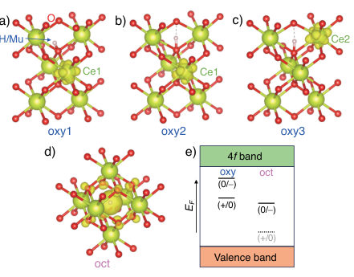
<figcaption class="paper-figure-caption"><b>Fig 1.</b> FIG. 1. (a)–(d) Electronic structures of interstitial H in CeO2 pre- dicted by DFT calculations: H is bonded to O with an unpaired f electron located at (a), (b) Ce1 site, or (c) Ce2 site. The H-O-Ce1 an- gle in (a) is ≈180◦(oxy1). The O-H-O angle (connected by dashed lines) is (b) ≈168◦(oxy2) and (c) ≈175◦(oxy3). (d) Atom-like H is located at the Ce-cornered octahedral (oct) site. (e) Schematics of the electronic levels associated with H in the energy band diagram (after Ref.[9]), where the E(+/0) level for the oct configuration is in- accessible due to the instability of the H+ state.</figcaption>
</figure>
<figure class="paper-figure-card">
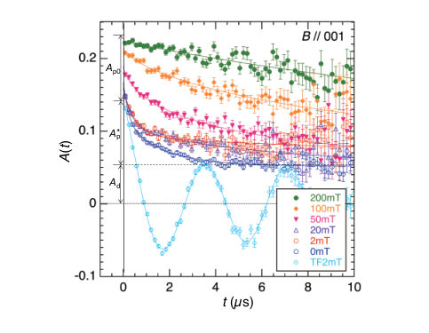
<figcaption class="paper-figure-caption"><b>Fig 2.</b> FIG. 2. µSR time spectra observed at 8.8 K under various external magnetic fields. The spectrum under TF (= 2 mT) represents sig- nals from the diamagnetic Mu∗state with the partial asymmetry A∗p and the non-relaxing diamagnetic Mu signal(s) with Ad (including background), whereas those under LF (= 0 to 300 mT) involve the signal from Mu0 state whose partial asymmetry Ap(B) varies with LF (where Ap0 is the maximum value for B →∞).</figcaption>
</figure>
<figure class="paper-figure-card">
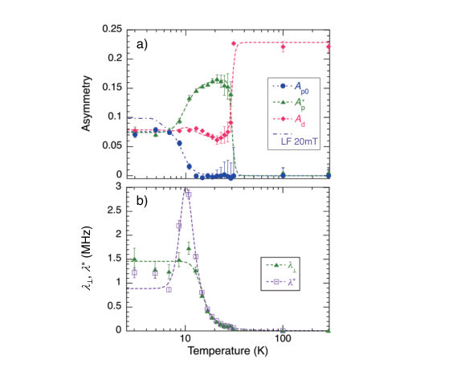
<figcaption class="paper-figure-caption"><b>Fig 3.</b> FIG. 3. Temperature dependence of (a) the partial asymmetry Ap0 (quasi-static Mu0), A∗p (Mu∗), and diamagnetic Mu, where the dot- dashed curve shows the behavior of Ap at LF = 20 mT. (b) The re- laxation rate of the A∗p component under TF = 2 mT (λ⊥) and LF = 20 mT (λ ∗) versus temperature. (See the main text for the dashed curves.)</figcaption>
</figure>
<figure class="paper-figure-card">
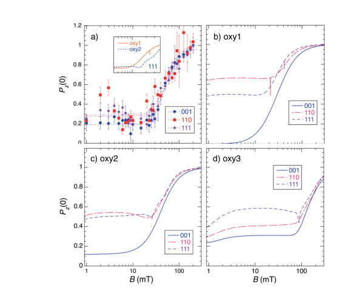
<figcaption class="paper-figure-caption"><b>Fig 4.</b> FIG. 4. (a) LF dependence of the initial polarization Pz(0) observed for LF parallel with the crystal axis ⟨001⟩, ⟨110⟩, and ⟨111⟩(see text for the dashed curves). The calculated LF dependence of Pz(0) for the corresponding three directions assuming the local structures shown in Fig. 1(a)-(c) with a free 1µB spin placed at each Ce site. Inset: comparison of Pz(0) with B ∥⟨111⟩between oxy1 and oxy2 over a field range of 4–40 mT around the inflection.</figcaption>
</figure>
<figure class="paper-figure-card">
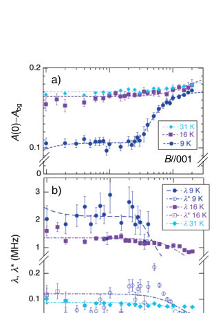
<figcaption class="paper-figure-caption"><b>Fig 5.</b> FIG. 5. LF dependence of (a) the initial asymmetry A(0) and (b) relaxation rate observed for LF parallel with the crystal axis ⟨001⟩. Dashed/dot-dashed curves are results of curve fits assuming the con- version process from quasi-static Mu0 oxy2 to dynamical Mu∗oct states described by Eqs. (4) and (5) (see text for detail).</figcaption>
</figure>
</div>

<p><strong>Summary.</strong> This work uses muon spin relaxation ($\mu	ext{SR}$) combined with DFT to characterize how hydrogen interacts electronically within ceria. It identifies two key electronic states—a polaron state and an atomic-like state—whose coexistence and transition are highly dependent on temperature. The findings illuminate the complex charge dynamics involving localized $4f$ electrons in correlated oxide materials.</p>
<p><strong>Why it may be interesting.</strong> The interplay between localized $4f$ electrons (a hallmark of strongly correlated systems) and an interstitial impurity ($    ext{H}/\mu^+$) provides a direct experimental probe into charge localization, polaron formation, and defect physics in oxides.</p>
<details>
<summary>Detailed structure</summary>
<p><strong>Main problem.</strong> The study investigates the local electronic structure and dynamics of hydrogen (H) implanted into ceria ($    ext{CeO}_2$), aiming to understand its charge state and interaction with localized $4f$ electrons.</p>
<p><strong>Main result.</strong> The muon spin relaxation data suggest the existence of two distinct states, a polaron-like $   ext{Mu}^0_{ ext{oxy}2}$ state and an atom-like $    ext{Mu}^*_{ ext{oct}}$ state, whose transition is temperature-dependent.</p>
<p><strong>Method.</strong> The research combines Muon Spin Rotation/Relaxation ($\mu	ext{SR}$) measurements with first-principles Density Functional Theory ($   ext{DFT}$) calculations to model the electronic states.</p>
<p><strong>Model / system.</strong> The system is interstitial hydrogen in single-crystalline ceria. The analysis models charge transfer between H and localized $4f$ electrons on Ce sites, leading to polaron formation or other defect configurations.</p>
<p><strong>Key observables.</strong> Muon spin relaxation rate ($\lambda$), partial asymmetry ($A_p$), initial polarization ($P_z(0)$), and temperature dependence of these signals.</p>
<p><strong>Important parameters / regimes.</strong> Low temperatures ($\approx 10 	ext{ K}$ to $30 	ext{ K}$), magnetic field strength, and the formation energy difference between proposed electronic states.</p>
<p><strong>Assumptions / limitations.</strong> The analysis assumes that $\mu	ext{SR}$ signals can be mapped onto specific electronic configurations predicted by DFT, although discrepancies suggest approximations like treating $4f$ electrons as free spins are insufficient.</p>
<p><strong>Figures summary.</strong> Figures show $\mu	ext{SR}$ time spectra under varying magnetic fields and crystal orientations; temperature dependence plots illustrate the transition between paramagnetic ($\mu^0$) and diamagnetic ($\mu^*$) states, fitted using conversion models.</p>
<p><strong>Paper structure.</strong> The paper progresses by first presenting low-temperature $\mu	ext{SR}$ data showing two muon states. It then uses DFT to propose polaron/atomic structures. Subsequent analysis focuses on fitting the temperature and field dependence of the relaxation rates to confirm a dynamic transition between these proposed electronic states.</p>
</details>
<details>
<summary>Abstract</summary>
<p>The local electronic states of muon (Mu) as an isotope of hydrogen (H) in high-quality single-crystalline ceria (CeO$_2$) are investigated using muon spin rotation/relaxation ($μ\text{SR}$) and first-principles density functional theory (DFT) calculations. Upon positive muon implantation, both paramagnetic (Mu$^0$) and diamagnetic (Mu$^*$) states are observed below $\approx$10 K. Magnetic field dependence of the Mu$^0$ signals combined with DFT results provides evidence for the formation of a polaron state, consisting of Mu bonded to a ligand oxygen and a $4f$ electron localized on a nearby Ce site. The crystal-orientation dependence of the Mu$^0$ signal suggests strong anisotropy of the $4f$ electron due to the spin-orbit coupling with lifted degeneracy. Furthermore, the Mu$^0$ state exhibits transition to the Mu$^*$ state that corresponds to another Mu$^0$ state (exhibiting a diamagnetic response due to fast spin/charge fluctuations) at temperatures above $\approx$10 K, before disappearing above $\approx$30 K. These findings suggest rapid diffusive motion of the $4f$ electrons and/or Mu (as well as H) at higher temperatures.</p>
</details>
<p><sub><a href="#top">↑ back to top</a></sub></p>

<p><a id="paper-2606.09394"></a></p>
<h3 id="strong-field-control-of-the-math845math-boson-resonance-in-math846math-collisions"><a href="http://arxiv.org/abs/2606.09394v1">Strong-field control of the $Z$-boson resonance in $e^+e^-$ collisions</a></h3>
<p><strong>Authors:</strong> Fengye Chen, Qingzheng Lv, Libin Fu<br>
<strong>Type:</strong> theory · <strong>Category:</strong> other · <strong>PDF:</strong> <a href="https://arxiv.org/pdf/2606.09394v1">https://arxiv.org/pdf/2606.09394v1</a><br>
<strong>Analysis basis:</strong> full PDF text, analyzed in chunks
<strong>Topic relevance:</strong> <code>Keldysh / 2PI / non-Gaussian methods</code> <strong>3/5</strong> · <code>methods for driven-dissipative</code> <strong>1/5</strong> · <code>non-equilibrium dynamics</code> <strong>1/5</strong></p>
<div class="figure-strip-hint">↔ Scroll figures horizontally</div>
<div class="paper-figures-scroll">
<figure class="paper-figure-card">
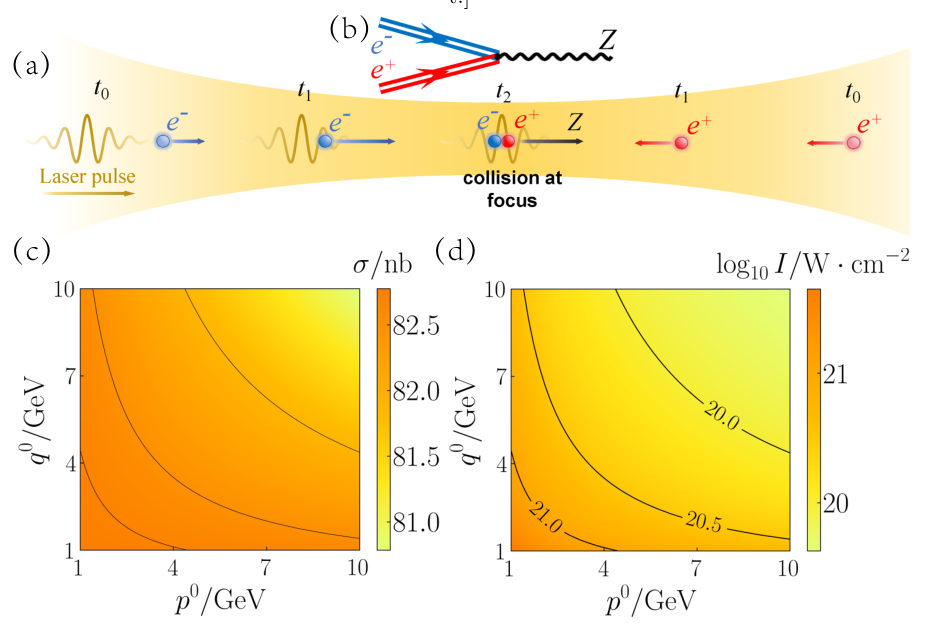
<figcaption class="paper-figure-caption"><b>Fig 1.</b> FIG. 1. (a) Schematic of the proposed e+e−collision geometry in a strong laser field. The labels t0, t1, and t2 denote the initial state, the laser-induced dressing and acceleration of the electron, and the collision at the laser focus, respectively. The positron propagates with nearly constant energy before the collision [25]. (b) Feynman diagram for the dominant laser-assisted channel for resonant Z-boson production. Double solid lines denote laser-dressed (Volkov) electron and positron states. (c) Threshold laser intensity required to reach √s = 91.2 GeV as a function of the initial lepton energies. (d) Corresponding Z-boson production cross section for the parameters in (c). Contours...</figcaption>
</figure>
<figure class="paper-figure-card">
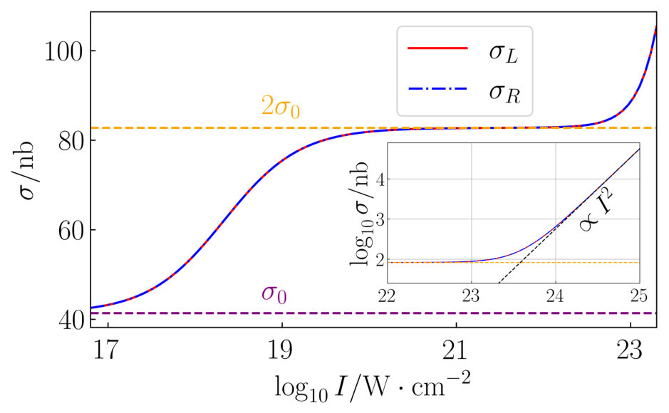
<figcaption class="paper-figure-caption"><b>Fig 2.</b> FIG. 2. Z-boson production cross section for equal initial lepton energies (p0 = q0) as a function of laser intensity. The results for left- and right-handed circular polarization overlap. For comparison, the field-free cross section is σ0 = 41.2 nb [27], recovered from Eq. (7) in the limit a0 →0.</figcaption>
</figure>
<figure class="paper-figure-card">
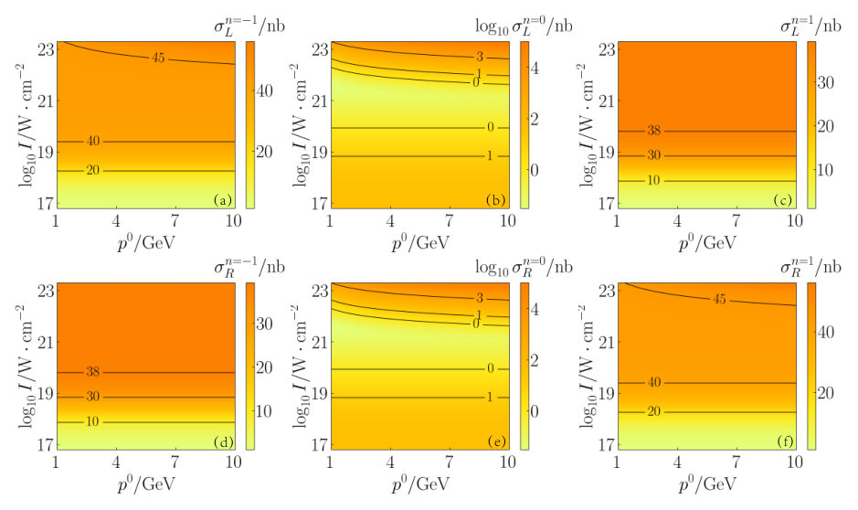
<figcaption class="paper-figure-caption"><b>Fig 3.</b> FIG. 3. Channel-resolved contributions to the total cross section as functions of the initial electron energy and laser intensity. Panels (a)–(c) correspond to a left-handed circularly polarized laser field, and panels (d)–(f) to the right-handed case. The labels n = {0, ±1} denote the corresponding laser- photon exchange channels. The initial positron energy is chosen according to Eq. (2).</figcaption>
</figure>
<figure class="paper-figure-card">
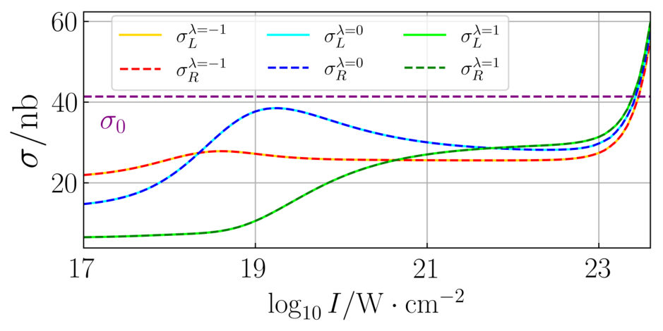
<figcaption class="paper-figure-caption"><b>Fig 4.</b> FIG. 4. Cross sections for the different polarization states of the produced Z boson (λ = −1, 0, 1) as functions of laser intensity. The initial lepton energies are taken to be equal, p0 = q0, according to Fig. 1(c).</figcaption>
</figure>
<figure class="paper-figure-card">
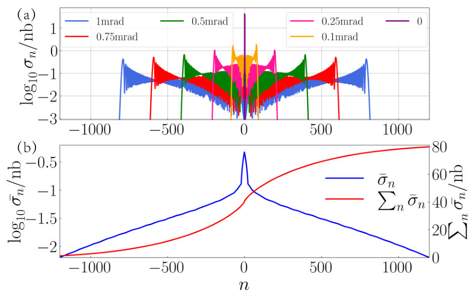
<figcaption class="paper-figure-caption"><b>Fig 5.</b> FIG. 5. (a) Channel-resolved cross sections for positron with incidence angle deviation ∆θ+ = 0, 0.1, 0.25, 0.5, 0.75, and 1 mrad, which simulate the scattering behavior of beam components with angular dispersion. (b) Channel-resolved cross section ¯σn and cumulative cross section P n ¯σn for a representative beam with with angular dispersion of 1 mrad, obtained from Monte Carlo simulations. These two curves are respectively applicable to the coordinate axes on the left and right sides and the latter one is the cumulative sum of the former.</figcaption>
</figure>
</div>

<p><strong>Summary.</strong> The paper demonstrates that intense laser fields fundamentally alter the process of Z-boson production in $e^+e^-$ collisions. By treating the field nonperturbatively, the authors predict that the resonance cross section will exhibit a characteristic evolution: saturating at intermediate intensities and growing quadratically at high intensities. This control mechanism also allows for the dynamic compensation of electroweak chiral asymmetries.</p>
<p><strong>Why it may be interesting.</strong> This work bridges strong-field QED with high-energy collider physics by showing how external fields can act as a dynamic knob to control fundamental particle interactions, analogous to controlling resonance widths or cross sections in vacuum.</p>
<details>
<summary>Detailed structure</summary>
<p><strong>Main problem.</strong> To investigate how intense, non-perturbative laser fields can dynamically control electroweak resonance phenomena, specifically the Z-boson production cross section in $e^+e^-$ collisions.</p>
<p><strong>Main result.</strong> The Z-resonance profile develops distinct intensity-dependent regimes: from vacuum behavior to saturation ($\approx 2\sigma_0$), and finally to an approximately quadratic enhancement at very high intensities. Furthermore, the laser field can compensate intrinsic chiral asymmetry, leading to nearly parity-balanced production.</p>
<p><strong>Method.</strong> The analysis uses strong-field Quantum Electrodynamics (QED) concepts, treating incoming leptons as Volkov states and calculating the cross section by decomposing the transition amplitude into photon-number channels ($n$).</p>
<p><strong>Model / system.</strong> The system is $e^+e^-$ annihilation occurring within an intense classical laser background field. The theory incorporates nonperturbative dressing effects on the incoming fermions, modifying the effective center-of-mass energy ($\sqrt{s}$) and opening multiphoton exchange channels.</p>
<p><strong>Key observables.</strong> Z-resonance profile, total cross section ($\sigma$), polarization composition of produced Z bosons, and the effective collision kinematics ($\sqrt{s}$).</p>
<p><strong>Important parameters / regimes.</strong> Laser intensity ($I$ or $a_0$), vacuum cross section ($\sigma_0$), and the degree of laser dressing (photon number $n$).</p>
<p><strong>Assumptions / limitations.</strong> The plane-wave approximation is used, and in some analyses, ultrarelativistic limits ($p_0 \gg m_e$) are employed. The effect of Z decay width modification is assumed negligible.</p>
<p><strong>Figures summary.</strong> Figures illustrate the total cross section evolution vs. laser intensity (showing vacuum $ o$ saturation $ o$ quadratic growth), channel-resolved contributions to $\sigma$, and polarization composition shifts with increasing field strength.</p>
<p><strong>Paper structure.</strong> The paper systematically analyzes the process by first establishing the theoretical framework using Volkov states, then calculating the cross section across different intensity regimes (weak, intermediate/saturation, high nonlinear), and finally detailing the consequences for polarization and kinematic reach.</p>
</details>
<details>
<summary>Abstract</summary>
<p>Resonant $Z$-boson production is a cornerstone of precision electroweak physics, with its vacuum line shape set by the $Z$ mass, width, and collision kinematics. We show that a strong laser field can significantly alter this picture. By treating the field nonperturbatively, we find that laser dressing of the incoming fermions alters the effective collision kinematics and opens laser-photon exchange channels, including multiphoton processes, in $e^{+}e^{-}$ collisions. As a result, the $Z$-resonance profile develops distinct intensity-dependent regimes, evolving from the vacuum limit to saturation at intermediate field strengths and to an approximately quadratic enhancement at higher intensities. Additionally, the polarization composition of the produced $Z$ bosons is redistributed. In particular, at high intensities the laser-induced contribution can compensate the intrinsic chiral asymmetry of the electroweak interaction, leading to nearly parity-balanced $Z$-boson production. Our results identify that strong classical fields can dynamically control electroweak resonance phenomena, opening a bridge between strong-field QED and high-energy collider physics.</p>
</details>
<p><sub><a href="#top">↑ back to top</a></sub></p>

<p><a id="paper-2606.07836"></a></p>
<h3 id="agentic-multi-fidelity-learning-of-quasiparticle-and-excitonic-properties"><a href="http://arxiv.org/abs/2606.07836v1">Agentic multi-fidelity learning of quasiparticle and excitonic properties</a></h3>
<p><strong>Authors:</strong> Arnab Neogi, Aaron Forde, Christopher A. Lane, Sergei Tretiak, Jian-Xin Zhu<br>
<strong>Type:</strong> theory · <strong>Category:</strong> numerical methods · <strong>PDF:</strong> <a href="https://arxiv.org/pdf/2606.07836v1">https://arxiv.org/pdf/2606.07836v1</a><br>
<strong>Analysis basis:</strong> full PDF text, analyzed in chunks
<strong>Topic relevance:</strong> <code>methods for driven-dissipative</code> <strong>3/5</strong> · <code>Keldysh / 2PI / non-Gaussian methods</code> <strong>1/5</strong></p>
<div class="figure-strip-hint">↔ Scroll figures horizontally</div>
<div class="paper-figures-scroll">
<figure class="paper-figure-card">
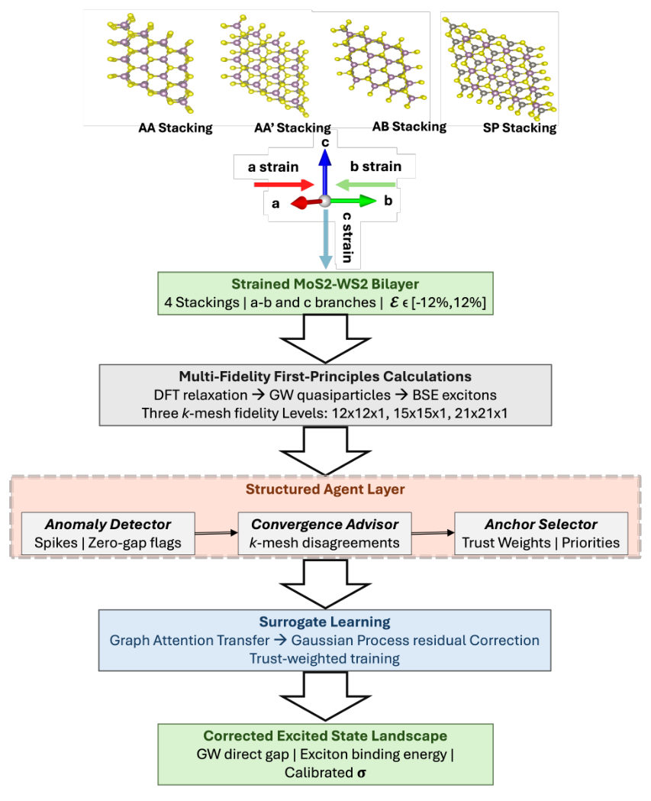
<figcaption class="paper-figure-caption"><b>Fig 1.</b> FIG. 1. Agent-guided workflow for corrected strain-dependent GW-BSE properties. Schematic overview of the closed-loop workflow used to construct corrected excited-state data for strained MoS2-WS2 bilayers. The input design space consists of four stacking registries and two strain branches over ϵ ∈[−12%, 12%]. For each configuration, multi-fidelity first- principles calculations are performed through DFT relaxation, GW quasiparticle calculations, and BSE exciton calculations using three k-mesh fidelities, 12 × 12 × 1, 15 × 15 × 1, and 21 × 21 × 1. A structured agent layer then evaluates the resulting dataset through anomaly detection, convergence assessment, and anchor selection. Spike-like...</figcaption>
</figure>
<figure class="paper-figure-card">
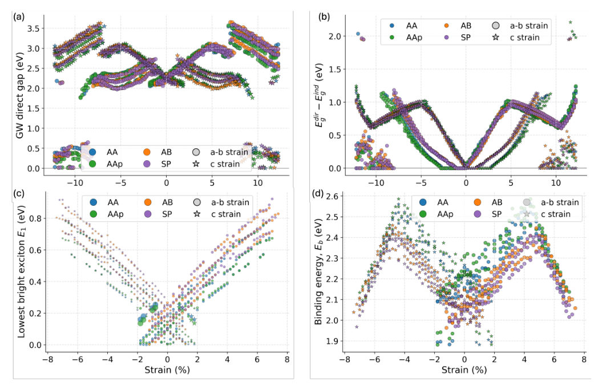
<figcaption class="paper-figure-caption"><b>Fig 2.</b> FIG. 2. Raw multi-fidelity excited-state landscapes across strain. Strain-dependent excited-state observables for the MoS2-WS2 bilayer dataset across stacking registries, strain branches, and reciprocal-space samplings. (a) GW direct bandgap. (b) Direct exciton binding energy, defined from the difference between the GW direct gap and the direct optical excitation energy. (c) Lowest-exciton binding energy, Eb. (d) Lowest bright exciton energy, E1. Across broad regions of the strained design space, the raw landscapes evolve smoothly and reflect the expected sensitivity of band alignment, dielectric screening, and excitonic response to deformation. Selected stacking-strain environments,...</figcaption>
</figure>
<figure class="paper-figure-card">
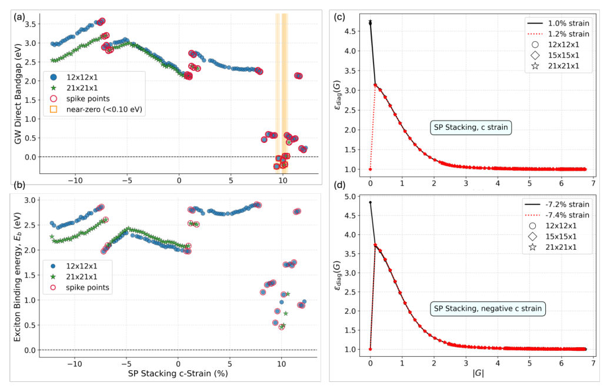
<figcaption class="paper-figure-caption"><b>Fig 3.</b> FIG. 3. Representative anomaly-prone regime and its dielectric-screening origin. (a) GW direct bandgap as a function of strain for SP stacking under the c-strain branch, comparing coarse and refined reciprocal-space samplings. Highlighted points identify localized spike anomalies and near-zero-gap configurations. (b) Corresponding exciton binding energy along the same structural branch, showing that the anomalous behavior appears simultaneously in quasiparticle and excitonic observables. (c,d) Diagonal microscopic dielectric screening, ϵdiag(G), for representative positive and negative c- strain configurations in the same anomaly-prone environment. The strong mesh sensitivity in the...</figcaption>
</figure>
<figure class="paper-figure-card">

<figcaption class="paper-figure-caption"><b>Fig 4.</b> FIG. 4. Closed-loop reconstruction of corrected excited-state trajectories. Representative corrected one-dimensional reconstructions obtained after agent-guided triage, graph-based transfer learning, and Gaussian-process residual correction. The available multi-fidelity first-principles data are shown together with the final corrected trajectories and predictive uncertainty bands. The examples include corrected GW direct bandgap and corrected exciton binding energy along the SP c-strain branch, an environment that contains localized numerical excursions in the raw coarse-fidelity data. The corrected trajectories suppress isolated artifacts inherited from anomaly-prone inputs while...</figcaption>
</figure>
<figure class="paper-figure-card">

<figcaption class="paper-figure-caption"><b>Fig 5.</b> FIG. 5. Agent-Guided anomaly triage improves surrogate model accuracy Parity plots comparing predicted and reference excited-state targets for models trained without and with the structured agent layer. (a) GW direct bandgap without agent-guided data triage. (b) GW direct bandgap with agent-guided trust weighting and anchor selection. (c) Exciton binding energy without agent guidance. (d) Exciton binding energy with agent guidance. Without the agent, the surrogate is trained on a mixture of physical signal and numerically contaminated labels, leading to large systematic deviations and poor agreement with higher-fidelity references. With the agent, suspicious coarse-fidelity points are...</figcaption>
</figure>
</div>

<p><strong>Summary.</strong> This paper introduces an agent-guided multi-fidelity framework to overcome numerical instabilities in GW-BSE calculations for 2D nanomaterials. By using a structured 'agent' layer to diagnose data quality across multiple simulation fidelities, the authors train machine learning models on curated, reliable information. This results in corrected, uncertainty-quantified predictions of electronic and excitonic properties that are robust against computational artifacts.</p>
<p><strong>Why it may be interesting.</strong> The methodology of explicitly diagnosing and correcting structured numerical artifacts before applying ML surrogate models is highly relevant to any field relying on high-throughput, computationally intensive simulations where convergence issues are common.</p>
<details>
<summary>Detailed structure</summary>
<p><strong>Main problem.</strong> Accurately simulating electronic structure and optical properties (quasiparticle/excitonic gaps) in low-dimensional nanomaterials using computationally expensive GW-BSE calculations, which are prone to numerical instabilities.</p>
<p><strong>Main result.</strong> An agent-guided multi-fidelity framework successfully corrects numerically induced artifacts in excited-state landscapes while preserving genuine physical strain dependence, significantly improving surrogate model accuracy over raw data interpolation.</p>
<p><strong>Method.</strong> The approach combines a structured 'agent' layer for diagnosing calculation quality (e.g., spike detection) with machine learning models (Graph Attention Networks and Gaussian Processes) to transfer information across different fidelity levels.</p>
<p><strong>Model / system.</strong> The study focuses on strained MoS2-WS2 bilayers, representing 2D van der Waals heterostructures characterized by strong quantum confinement and sensitivity to strain and stacking registry.</p>
<p><strong>Key observables.</strong> Quasiparticle bandgaps (GW direct/fundamental), exciton binding energies, oscillator strengths, and dielectric screening ($\epsilon_{	ext{diag}}(G)$).</p>
<p><strong>Important parameters / regimes.</strong> Strain ($\epsilon \in [-12\%, 12\%]$), stacking registries, and multiple reciprocal-space sampling fidelities ($k$-meshes).</p>
<p><strong>Assumptions / limitations.</strong> The core assumption is that numerical failures are structured artifacts (e.g., in long-wavelength screening) that can be diagnosed by an agent layer, allowing the model to distinguish them from physical signals.</p>
<p><strong>Figures summary.</strong> Figures illustrate the workflow schematic, raw observable evolution across strain, specific anomaly regimes linked to mesh sensitivity, and comparative parity plots showing superior performance with the agent vs. no-agent baseline.</p>
<p><strong>Paper structure.</strong> The paper details a closed-loop process: 1) Generating multi-fidelity data; 2) Employing an agent layer to diagnose numerical fragility via diagnostics (spikes, cross-mesh disagreement); 3) Training a transfer learning model using trust weights and sparse anchors; 4) Applying Gaussian Process correction for uncertainty quantification.</p>
</details>
<details>
<summary>Abstract</summary>
<p>Many-body GW-Bethe-Salpeter equation calculations are essential for accurate simulations of electronic structure and optical properties in modern low-dimensional nanomaterials. However, these methods are computationally demanding and can exhibit localized numerical instabilities or convergence failures that are difficult to detect within high-throughput workflows. We introduce an agent-guided multi-fidelity framework for correcting GW-Bethe-Salpeter excited-state landscapes in strained MoS2-WS2 bilayers. Across stacking registries, strain branches and reciprocal-space samplings, the workflow identifies spike-like excursions, near-zero-gap collapse and cross-fidelity inconsistencies associated with fragile long-wavelength dielectric screening. A structural agent evaluates calculations by assigning confidence weights and selectively using a small number of high-accuracy reference points. Machine learning models then transfer information across related systems and apply Gaussian process corrections to recover improved quasiparticle gaps and exciton binding energies, with calibrated uncertainty estimates. The approach corrects numerically induced artifacts without erasing physical strain dependence and substantially improves agreement with higher-fidelity references relative to a no-agent baseline. These results show that reliable surrogate learning for excited-state materials requires explicit diagnosis of numerical fragility, not direct interpolation of raw first-principles data points. The proposed framework is readily transferable to other optoelectronic nanomaterials characterized by strong quantum confinement, such as quantum dots, nanoribbons, layered two-dimensional semiconductors, and hybrid perovskite nanostructures.</p>
</details>
<p><sub><a href="#top">↑ back to top</a></sub></p>

<p><a id="paper-2606.08189"></a></p>
<h3 id="every-rank-two-entangled-state-is-projectively-steerable"><a href="http://arxiv.org/abs/2606.08189v1">Every Rank-Two Entangled State is Projectively Steerable</a></h3>
<p><strong>Authors:</strong> Yu-Xuan Zhang, Jing-Ling Chen<br>
<strong>Type:</strong> theory · <strong>Category:</strong> quantum information and computing · <strong>PDF:</strong> <a href="https://arxiv.org/pdf/2606.08189v1">https://arxiv.org/pdf/2606.08189v1</a><br>
<strong>Analysis basis:</strong> full PDF text, analyzed in chunks
<strong>Topic relevance:</strong> <code>entanglement &amp; information structure</code> <strong>3/5</strong></p>
<div class="figure-strip-hint">↔ Scroll figures horizontally</div>
<div class="paper-figures-scroll">
<figure class="paper-figure-card">

<figcaption class="paper-figure-caption"><b>Fig 1.</b> Low-resolution page preview, page 2</figcaption>
</figure>
<figure class="paper-figure-card">

<figcaption class="paper-figure-caption"><b>Fig 2.</b> Low-resolution page preview, page 3</figcaption>
</figure>
<figure class="paper-figure-card">

<figcaption class="paper-figure-caption"><b>Fig 3.</b> Low-resolution page preview, page 4</figcaption>
</figure>
<figure class="paper-figure-card">

<figcaption class="paper-figure-caption"><b>Fig 4.</b> Low-resolution page preview, page 5</figcaption>
</figure>
<figure class="paper-figure-card">

<figcaption class="paper-figure-caption"><b>Fig 5.</b> Low-resolution page preview, page 6</figcaption>
</figure>
</div>

<p><strong>Summary.</strong> This paper proves a structural theorem showing that all rank-two entangled bipartite quantum states are projectively steerable in at least one direction. The authors achieve this by employing advanced mathematical tools from algebraic geometry and boundary analysis, demonstrating that the existence of entanglement forces specific geometric properties on the state's support structure.</p>
<p><strong>Why it may be interesting.</strong> This work provides deep mathematical insight into the structure of entanglement for low-rank mixed states, connecting abstract algebraic geometry concepts to fundamental quantum correlations like steering. This has implications for understanding resource theories beyond simple qubit models.</p>
<details>
<summary>Detailed structure</summary>
<p><strong>Main problem.</strong> To prove that every rank-two bipartite entangled state is projectively steerable, thereby closing a potential bifurcation point between entanglement and Einstein–Podolsky–Rosen (EPR) steering in mixed states.</p>
<p><strong>Main result.</strong> The authors prove that for any rank-two entangled state $
ho$, it must be projectively steerable in at least one direction, establishing a strong link between low-rank entanglement and directional correlation measures.</p>
<p><strong>Method.</strong> The proof utilizes advanced techniques from algebraic geometry (analyzing the Segre variety) and boundary analysis on quantum states. It establishes steering by showing that any attempt to model the state locally using hidden variables violates positivity constraints near pure state boundaries.</p>
<p><strong>Model / system.</strong> The study concerns bipartite entangled quantum states $
ho$ in arbitrary finite local dimensions, specifically focusing on the case where the rank of the density matrix is exactly two ($  ext{rank}(
ho)=2$).</p>
<p><strong>Key observables.</strong> Projective steerability (in at least one direction), entanglement ($   ext{Ent}$), Negative Partial Transpose ($ ext{NPT}$), and the support–kernel tangent block structure.</p>
<p><strong>Important parameters / regimes.</strong> The effective local dimensions ($m$ and $n$) of the subsystems, and the rank of the state ($r=2$).</p>
<p><strong>Assumptions / limitations.</strong> The analysis is restricted to bipartite states with $    ext{rank}(
ho)=2$, and it relies on analyzing structural properties via boundary theorems rather than optimization techniques.</p>
<p><strong>Paper structure.</strong> The paper builds the proof by first establishing necessary conditions for pure contacts using dimension counting (Lemma S1). It then uses scaling arguments near these boundaries to show that any local hidden-state model fails (Lemma S2), culminating in a structural certificate based on non-zero support–kernel tangent blocks proving projective steerability.</p>
</details>
<details>
<summary>Abstract</summary>
<p>Pure entangled states are already steerable by suitable projective measurements within their Schmidt supports, whereas rank two is the first genuinely mixed rank at which entanglement and Einstein--Podolsky--Rosen steering could bifurcate. We prove that this bifurcation does not occur even under the restricted measurement class of projective measurements: every rank-two bipartite entangled state in arbitrary finite local dimensions is projectively steerable in at least one direction, and is two-way projectively steerable when the effective local dimensions are equal. The proof is a boundary theorem rather than a steering-inequality optimization or a two-qubit reduction. A dimension--rank obstruction forces a projective outcome on the larger effective party to hit a pure boundary point of the trusted state cone. At such a contact, a nonzero support--kernel tangent block is simultaneously an NPT minor and a projective-steering certificate; if the first contact is degenerate, the rank-two constraint closes that branch and forces a second, active contact. Thus the entire first mixed-state stratum is a complete projective-steering sector, and the same support--kernel geometry gives a practical low-rank certificate whenever the relevant boundary contact is nondegenerate.</p>
</details>
<p><sub><a href="#top">↑ back to top</a></sub></p>

<p><a id="paper-2606.09193"></a></p>
<h3 id="quantitative-measurement-of-fluid-inertial-effects-in-confined-brownian-motion"><a href="http://arxiv.org/abs/2606.09193v1">Quantitative measurement of fluid inertial effects in confined Brownian motion</a></h3>
<p><strong>Authors:</strong> Quentin Ferreira, Pablo Palacios-Alonso, Harshit Joshi, Rafael Delgado-Buscalioni, Yacine Amarouchene, Thomas Salez<br>
<strong>Type:</strong> both · <strong>Category:</strong> statistical mechanics · <strong>PDF:</strong> <a href="https://arxiv.org/pdf/2606.09193v1">https://arxiv.org/pdf/2606.09193v1</a><br>
<strong>Analysis basis:</strong> full PDF text, analyzed in chunks
<strong>Topic relevance:</strong> <code>non-equilibrium dynamics</code> <strong>2/5</strong> · <code>non-equilibrium universality</code> <strong>2/5</strong> · <code>Frenkel-Kontorova</code> <strong>1/5</strong> · <code>Keldysh / 2PI / non-Gaussian methods</code> <strong>1/5</strong> · <code>analog quantum simulation</code> <strong>1/5</strong> · <code>correlated / nonlocal dissipation</code> <strong>1/5</strong> · <code>driven-dissipative phase transition</code> <strong>1/5</strong> · <code>methods for driven-dissipative</code> <strong>1/5</strong></p>
<div class="figure-strip-hint">↔ Scroll figures horizontally</div>
<div class="paper-figures-scroll">
<figure class="paper-figure-card">

<figcaption class="paper-figure-caption"><b>Fig 1.</b> FIG. 2. Influence of the wall on the thermal spectrum of the colloidal probe. a) Experimental positional power spectral density (PSD) of the sphere-cantilever probe in water as a function of the frequency f and normalized distance D/R to the wall. b) Experimental PSDs (points), in arbitrary units (a. u.), as functions of the frequencies f, for three specific dis- tances D, as indicated, and corresponding to the dotted lines in panel a). In addition, the respective fits to Eq. (2) (solid lines) are shown. The fitting is performed over a frequency range between fmin ∈[10, 80] Hz and fmax = 46 kHz, cover- ing the first mode of the oscillator, with minimal interferences from the higher-order...</figcaption>
</figure>
<figure class="paper-figure-card">

<figcaption class="paper-figure-caption"><b>Fig 2.</b> FIG. 3. Influence of the wall on viscous damping and fluid inertial effects. a) Experimental steady-viscous contribution c0 (discs) of the sphere-cantilever probe, as a function of normalized distance D/R. Also shown are the corresponding numerical data (diamonds) for a pure sphere. The solid line represents Brenner’s prediction for a pure sphere (see Eq. (3)) [15, 43]. b) Experimental history-force contribution cB (discs) of the sphere-cantilever probe, normalized by its bulk value cB(∞), as a function of normalized distance D/R. Also shown are the corresponding numerical data (diamonds) for a pure sphere. c) Experimental increase cm −cm(∞) in the added-mass contribution (discs) of the...</figcaption>
</figure>
</div>

<p><strong>Summary.</strong> This work quantitatively investigates how inertial forces—specifically added mass and history effects—alter Brownian motion when particles are strongly confined near a solid wall. By combining high-resolution AFM experiments with advanced simulations, the authors successfully separate these distinct hydrodynamic contributions across various confinement regimes. The results provide crucial insights for nanofluidics and interfacial biophysics by mapping out the full frequency-dependent drag response.</p>
<p><strong>Why it may be interesting.</strong> While focused on classical fluid dynamics, the quantitative separation of memory effects (history force) and inertia (added mass) in confined systems provides a rigorous framework for analyzing non-equilibrium fluctuations relevant to open quantum systems or particle transport near boundaries.</p>
<details>
<summary>Detailed structure</summary>
<p><strong>Main problem.</strong> To quantitatively investigate the hydrodynamic response of Brownian particles near a rigid wall, specifically separating and understanding the distinct contributions of fluid inertial effects (added mass and history effect) under strong confinement and thermal fluctuations.</p>
<p><strong>Main result.</strong> The study successfully establishes a complete picture of Brownian motion at interfaces by quantifying how added-mass and history-force contributions change with confinement, confirming theoretical models like Brenner's result for the steady-viscous drag.</p>
<p><strong>Method.</strong> A combination of broadrange thermal colloidal-probe Atomic Force Microscopy (AFM) experiments and advanced numerical simulations using spectral fluid solvers was employed.</p>
<p><strong>Model / system.</strong> The system involves a colloidal probe attached to an AFM cantilever moving in a Newtonian fluid near a planar rigid substrate. The analysis focuses on the complex friction coefficient, $\gamma$, which captures the full hydrodynamic response.</p>
<p><strong>Key observables.</strong> Positional power spectral density (PSD), and the fitted dimensionless coefficients quantifying contributions: $c_0$ (steady-viscous), $c_B$ (history-force), and $c_m$ (added-mass).</p>
<p><strong>Important parameters / regimes.</strong> Confinement ratio ($D/R$), frequency ($   ext{Wo} \propto f/f_
u$), and the separation distance $D$. The study spans from bulk to deep lubrication regimes.</p>
<p><strong>Assumptions / limitations.</strong> The primary assumption is that the decomposition of the friction coefficient $\gamma$ into its three distinct contributions ($c_0, c_B, c_m$) remains valid even in the presence of strong wall confinement.</p>
<p><strong>Figures summary.</strong> Figures show the influence of the wall on the thermal spectrum (PSD) across various separations $D$, and plot the fitted parameters ($c_0, c_B, c_m$) as functions of $D/R$ comparing experiment to theory.</p>
<p><strong>Paper structure.</strong> The paper systematically analyzes the hydrodynamic response by first establishing the experimental setup and diagnostics using PSDs. It then tackles each inertial contribution (steady-viscous, history force, added mass) separately, validating theoretical predictions against both experimental measurements and numerical simulations across varying confinement regimes.</p>
</details>
<details>
<summary>Abstract</summary>
<p>The hydrodynamic response of Brownian particles in liquids is fundamentally altered by inertial forces arising from unsteady momentum transport in the surrounding fluid. These forces are of two distinct types\,: the added mass and the history effect. While both are well understood in bulk and weakly-confined geometries, under deterministic driving, their respective behaviours under strong confinement and thermal fluctuations remain scarcely addressed, unclear and often entangled together. The goal of the present study is thus to fill this fundamental gap. The behaviours of the two distinct inertial contributions are quantitatively investigated in the vicinity of a flat, rigid wall, using a combination of broadrange thermal colloidal-probe atomic-force-microscopy experiments, advanced numerical simulations and theory. The separation of the added-mass and history-force contributions is achieved through their different frequency-scaling signatures within the measured high-resolution thermal spectra. Our results establish a complete picture of Brownian motion at interfaces, in the lubrication regime, with direct relevance to nanofluidics and interfacial biophysics.</p>
</details>
<p><sub><a href="#top">↑ back to top</a></sub></p>

<p><a id="paper-2606.07774"></a></p>
<h3 id="length-resolved-operator-growth-and-path-entropy-obstructions-to-many-body-localization"><a href="http://arxiv.org/abs/2606.07774v1">Length-resolved Operator Growth and Path-Entropy Obstructions to Many-Body Localization</a></h3>
<p><strong>Authors:</strong> J. Sirker<br>
<strong>Type:</strong> theory · <strong>Category:</strong> disordered systems and neural networks · <strong>PDF:</strong> <a href="https://arxiv.org/pdf/2606.07774v1">https://arxiv.org/pdf/2606.07774v1</a><br>
<strong>Analysis basis:</strong> full PDF text, analyzed in chunks
<strong>Topic relevance:</strong> <code>entanglement &amp; information structure</code> <strong>2/5</strong> · <code>non-equilibrium dynamics</code> <strong>2/5</strong> · <code>analog quantum simulation</code> <strong>1/5</strong> · <code>driven-dissipative phase transition</code> <strong>1/5</strong> · <code>exotic spin models in light-matter</code> <strong>1/5</strong> · <code>non-equilibrium universality</code> <strong>1/5</strong> · <code>scars &amp; prethermalization</code> <strong>1/5</strong></p>
<div class="figure-strip-hint">↔ Scroll figures horizontally</div>
<div class="paper-figures-scroll">
<figure class="paper-figure-card">

<figcaption class="paper-figure-caption"><b>Fig 1.</b> Low-resolution page preview, page 2</figcaption>
</figure>
<figure class="paper-figure-card">

<figcaption class="paper-figure-caption"><b>Fig 2.</b> Low-resolution page preview, page 3</figcaption>
</figure>
<figure class="paper-figure-card">

<figcaption class="paper-figure-caption"><b>Fig 3.</b> Low-resolution page preview, page 4</figcaption>
</figure>
<figure class="paper-figure-card">

<figcaption class="paper-figure-caption"><b>Fig 4.</b> Low-resolution page preview, page 5</figcaption>
</figure>
<figure class="paper-figure-card">

<figcaption class="paper-figure-caption"><b>Fig 5.</b> Low-resolution page preview, page 6</figcaption>
</figure>
</div>

<p><strong>Summary.</strong> This paper establishes a structural obstruction to Many-Body Localization in disordered quantum spin chains by analyzing the almost factorial growth of local operators. By resolving this growth across spatial support lengths, it proves that dynamical locality is impossible for generic disorder strengths. The findings suggest that such systems are asymptotically ergodic unless an unknown cancellation principle stabilizes them.</p>
<p><strong>Why it may be interesting.</strong> The work provides deep theoretical constraints on the stability of MBL, suggesting that generic disorder drives systems towards ergodic behavior by overwhelming any potential localization mechanism through operator growth.</p>
<details>
<summary>Detailed structure</summary>
<p><strong>Main problem.</strong> The paper investigates Many-Body Localization (MBL) by analyzing the growth rate of local operators via iterated commutators in disordered quantum spin chains.</p>
<p><strong>Main result.</strong> It rigorously proves that operator norms exhibit almost factorial growth, which rules out dynamical locality and suggests that generic disordered systems are asymptotically ergodic.</p>
<p><strong>Method.</strong> The analysis uses commutator expansion techniques, resolving operator norms based on support length ($\ell$), and introducing path-entropy arguments to constrain the possible dynamics.</p>
<p><strong>Model / system.</strong> The primary model is a disordered Ising chain with transverse and longitudinal fields. The analysis is generalized to abstract LIOM Hamiltonians using Pauli string expansions.</p>
<p><strong>Key observables.</strong> Operator norms ($\| \cdot \|$), moments $\mu_{2k}$, length-resolved operator weights, and path entropy.</p>
<p><strong>Important parameters / regimes.</strong> Disorder strength ($W$), coupling strength ($J$), and the finite-size crossover scale $L \sim (W/J)^2$.</p>
<p><strong>Assumptions / limitations.</strong> The analysis often assumes strictly positive couplings to derive rigorous lower bounds; it also relies on identifying a structural path-entropy obstruction.</p>
<p><strong>Figures summary.</strong> Not specified, but the notes indicate comparisons between theoretical growth rates and finite-size numerical access limits.</p>
<p><strong>Paper structure.</strong> The paper progresses from establishing almost factorial growth in moments (Cao's result generalization) to resolving this growth locally ($\ell$), which leads to ruling out dynamical locality. It then identifies a structural path-entropy obstruction against perturbative constructions of Local Integrals of Motion (LIOMs).</p>
</details>
<details>
<summary>Abstract</summary>
<p>For the disordered Ising chain with transverse and longitudinal fields, where couplings and fields are drawn from strictly positive distributions, Cao~\cite{Cao} has shown that the moments $μ_{2k} = \|[H,σ^z_0]^{(k)}\|_2^2$ grow almost factorially, $μ_{2k}^{1/(2k)}\sim k/\ln k$, and thus asymptotically at the maximal allowed rate. We generalize this result by resolving the operator norm in support length and show that the weight at length $\ell_k \sim k/\ln k$ already exhibits almost factorial growth, $\|[H,σ^z_0]^{(k)}_{\ell_k}\|_2 \gtrsim (k/\ln k)^k$. This implies maximal spatial delocalization of local operators and, in particular, rules out dynamical locality -- the strongest form of many-body localization -- at any disorder strength. We further establish rigorously a finite-size crossover scale $L\sim (W/J)^2$, where $W$ is the disorder and $J$ the coupling strength. For $L\lesssim (W/J)^2$ numerical studies only access a pre-asymptotic regime. Finally, we identify a structural path-entropy obstruction to perturbative LIOM constructions, based on the almost factorial branching of operator content and independent of resonance effects; the same mechanism strongly suggests ballistic real-time operator spreading, so sub-ballistic or localized dynamics would require a presently unidentified cancellation principle acting on almost factorially many disorder-dependent paths with random amplitudes.</p>
</details>
<p><sub><a href="#top">↑ back to top</a></sub></p>

<p><a id="paper-2606.07931"></a></p>
<h3 id="pointwise-complexity-for-gaussian-fields-upper-envelopes-algorithmic-lower-bounds-and-separation"><a href="http://arxiv.org/abs/2606.07931v1">Pointwise Complexity for Gaussian Fields: Upper Envelopes, Algorithmic Lower Bounds, and Separation</a></h3>
<p><strong>Authors:</strong> Yunbei Xu<br>
<strong>Type:</strong> theory · <strong>Category:</strong> statistical mechanics · <strong>PDF:</strong> <a href="https://arxiv.org/pdf/2606.07931v1">https://arxiv.org/pdf/2606.07931v1</a><br>
<strong>Analysis basis:</strong> full PDF text, analyzed in chunks
<strong>Topic relevance:</strong> <code>non-equilibrium dynamics</code> <strong>2/5</strong> · <code>Keldysh / 2PI / non-Gaussian methods</code> <strong>1/5</strong> · <code>analog quantum simulation</code> <strong>1/5</strong> · <code>correlated / nonlocal dissipation</code> <strong>1/5</strong> · <code>driven-dissipative phase transition</code> <strong>1/5</strong> · <code>entanglement &amp; information structure</code> <strong>1/5</strong> · <code>methods for driven-dissipative</code> <strong>1/5</strong> · <code>non-equilibrium universality</code> <strong>1/5</strong></p>
<div class="figure-strip-hint">↔ Scroll figures horizontally</div>
<div class="paper-figures-scroll">
<figure class="paper-figure-card">

<figcaption class="paper-figure-caption"><b>Fig 1.</b> Low-resolution page preview, page 2</figcaption>
</figure>
<figure class="paper-figure-card">

<figcaption class="paper-figure-caption"><b>Fig 2.</b> Low-resolution page preview, page 3</figcaption>
</figure>
<figure class="paper-figure-card">

<figcaption class="paper-figure-caption"><b>Fig 3.</b> Low-resolution page preview, page 4</figcaption>
</figure>
<figure class="paper-figure-card">

<figcaption class="paper-figure-caption"><b>Fig 4.</b> Low-resolution page preview, page 5</figcaption>
</figure>
<figure class="paper-figure-card">

<figcaption class="paper-figure-caption"><b>Fig 5.</b> Low-resolution page preview, page 6</figcaption>
</figure>
</div>

<p><strong>Summary.</strong> The paper develops advanced tools to quantify the 'size' or complexity of Gaussian random fields in high dimensions. It achieves this by deriving sharp pointwise upper bounds and contrasting them with information-theoretic lower bounds, demonstrating that these algorithmic measures provide a more accurate assessment of difficulty than classical minimax theory, especially in complex physical models like RG flows.</p>
<p><strong>Why it may be interesting.</strong> This work provides rigorous mathematical machinery (pointwise complexity, algorithmic certificates) that can be directly applied to analyze the effective dimensionality of complex quantum systems or statistical models undergoing renormalization group flow.</p>
<details>
<summary>Detailed structure</summary>
<p><strong>Main problem.</strong> The core problem is establishing sharp, variance-aware pointwise complexity bounds for Gaussian fields, refining classical generic chaining results.</p>
<p><strong>Main result.</strong> The paper derives a majorizing-measure theorem providing high-probability envelopes and establishes that algorithmic lower bounds can provide local-geometric certificates of pointwise complexity, separating these from coarse minimax risks.</p>
<p><strong>Method.</strong> The authors use advanced concentration inequalities (e.g., Fernique–Talagrand functional) combined with information-theoretic principles (interactive Fano/data-processing principle) to derive both upper and lower bounds on the field's supremum.</p>
<p><strong>Model / system.</strong> The analysis centers on centered Gaussian processes $\{X_x\}_{x\in T}$ defined over a metric space $T$. Later sections apply these concepts to Renormalization Group (RG) flows, modeling coarse-graining maps and phase-atlas representations in statistical physics.</p>
<p><strong>Key observables.</strong> Pointwise Fernique–Talagrand functional ($\Phi_\mu(x)$), global in-expectation supremum ($\mathbb{E} \sup |X_x|$), algorithmic ghost small-ball mass ($
ho_{\Delta, Q}(b_t)$), and local time/cover times on graphs.</p>
<p><strong>Important parameters / regimes.</strong> Local variance scale $\sigma(x)$, ambient prior $\mu$, global radius $R^*$, and parameters defining the separation regimes (e.g., $\log N / \log M$).</p>
<p><strong>Assumptions / limitations.</strong> The analysis requires specific conditions on the metric space, such as finite supremum of local variances ($R^* < \infty$), and often assumes the existence of stable charts or appropriate prior structures for comparison.</p>
<p><strong>Figures summary.</strong> Not specified in notes, but figures likely compare different scaling regimes (e.g., Fano vs. Algorithmic vs. Minimax) across various geometric settings (graphs, parameter spaces).</p>
<p><strong>Paper structure.</strong> The paper progresses from establishing the pointwise Gaussian majorizing-measure bound for general fields to comparing this with algorithmic lower bounds derived from information theory. It then applies these tools to specific physical contexts like RG flows and random walks on graphs to demonstrate separations between different complexity measures.</p>
</details>
<details>
<summary>Abstract</summary>
<p>We prove a variance-aware pointwise majorizing-measure theorem for centered Gaussian processes. Classical generic chaining characterizes the scalar quantity $\mathbb E\sup_{x\in T}X_x$; the theorem here gives a simultaneous high-probability envelope for the entire field. For an ambient prior $μ$, the envelope at $x$ is governed by a pointwise Fernique-Talagrand functional \[Φ_μ(x):=\int_0^{4σ(x)}\sqrt{\log\frac{1}{μ(B_d(x,\varepsilon))}}\,d\varepsilon,\] together with the corresponding Gaussian tail term. The theorem provides a reusable field-level refinement of classical generic chaining and a Gaussian-process counterpart of pointwise empirical-process bounds for deep neural networks.   We also record a Bayesian algorithmic lower envelope from the interactive Fano/data-processing principle. For a known prior $π$, an observation channel, and a concrete estimator $\widehat t(Y)$, the lower bound is expressed through the exact ghost small-ball mass $\mathbb E_{Y\sim Q}π(B_d(\widehat t(Y),Δ))$, rather than a worst-case covering number. In Gaussian location experiments, comparison decoders convert Bayes location error into lower bounds on decision-aligned Gaussian ranges. We then construct an elementary weighted-basis example separating the usual Fano relaxation for a fixed prior, the Bayesian algorithmic lower envelope, the pointwise Gaussian envelope on the selected subatlas, and the full-class minimax risk/global Gaussian scale. Together, these results show that algorithmic lower bounds provide local-geometric certificates of pointwise complexity for fixed estimators in overparameterized ambient classes, precisely in regimes where classical minimax theory becomes either too coarse or oracle-dependent.</p>
</details>
<p><sub><a href="#top">↑ back to top</a></sub></p>

<p><a id="paper-2606.08645"></a></p>
<h3 id="nonlocal-teams-and-information-structures"><a href="http://arxiv.org/abs/2606.08645v1">Nonlocal Teams and Information Structures</a></h3>
<p><strong>Authors:</strong> Drishti Baruah, Sachin Teli, Ankur A. Kulkarni<br>
<strong>Type:</strong> theory · <strong>Category:</strong> quantum information and computing · <strong>PDF:</strong> <a href="https://arxiv.org/pdf/2606.08645v1">https://arxiv.org/pdf/2606.08645v1</a><br>
<strong>Analysis basis:</strong> full PDF text, analyzed in chunks
<strong>Topic relevance:</strong> <code>entanglement &amp; information structure</code> <strong>2/5</strong> · <code>quantum measurements</code> <strong>2/5</strong> · <code>correlated / nonlocal dissipation</code> <strong>1/5</strong> · <code>driven-dissipative phase transition</code> <strong>1/5</strong> · <code>methods for driven-dissipative</code> <strong>1/5</strong> · <code>non-equilibrium dynamics</code> <strong>1/5</strong></p>
<div class="figure-strip-hint">↔ Scroll figures horizontally</div>
<div class="paper-figures-scroll">
<figure class="paper-figure-card">

<figcaption class="paper-figure-caption"><b>Fig 1.</b> Fig. 1: A block diagram explaining the static and dynamic information structure. In the dynamic information structure the information and actions of the two players are interdepen- dent, unlike the static information structure.</figcaption>
</figure>
<figure class="paper-figure-card">

<figcaption class="paper-figure-caption"><b>Fig 2.</b> Fig. 2: Fractional quantum advantage for static information structure:= (JS∗ C −JS∗ ⊥)/JS∗ C .</figcaption>
</figure>
<figure class="paper-figure-card">

<figcaption class="paper-figure-caption"><b>Fig 3.</b> Fig. 3: Fractional quantum advantage for dynamic information structure.</figcaption>
</figure>
<figure class="paper-figure-card">

<figcaption class="paper-figure-caption"><b>Fig 4.</b> Fig 3 shows the fractional quantum advantage for the dynamic information structure. Sim- ilar features like Fig. 2, such as maxima at the center and symmetry across quadrants, are observed in Fig. 3. The main difference is that the dynamic information structure has a smaller region of quantum advantage compared to static. Also the central horizontal lines in both</figcaption>
</figure>
</div>

<p><strong>Summary.</strong> This theoretical work analyzes Bell inequalities by framing them as team optimization problems under varying information structures (static vs. dynamic). The core finding is that while projective quantum strategies yield optimal results in the static case, this optimality breaks down in the dynamic setting. This highlights the critical dependence of quantum advantages on the precise structure of information flow between agents.</p>
<p><strong>Why it may be interesting.</strong> The findings demonstrate that quantum advantages derived under idealized static assumptions can be fragile and disappear when realistic, time-dependent correlations or noise channels are introduced into the information structure.</p>
<details>
<summary>Detailed structure</summary>
<p><strong>Main problem.</strong> The research investigates how changing the information structure—from static to dynamic—affects the quantum advantage demonstrated by Bell inequalities in stochastic team games.</p>
<p><strong>Main result.</strong> Projective quantum strategies, optimal for the standard (static) CHSH game, fail to maintain optimality when the information structure becomes dynamic, sometimes leading to a strict quantum disadvantage compared to classical strategies.</p>
<p><strong>Method.</strong> The authors model nonlocal games as team optimization problems, comparing minimum expected costs achievable by classical, projective, and general quantum strategies under both static and dynamic input conditions.</p>
<p><strong>Model / system.</strong> The primary model is the CHSH game analyzed through a team-theoretic lens. The analysis uses Bell states ($
ho$) and characterizes strategies via Positive Operator-Valued Measures (POVMs) $\{E_i\}$ and $\{F_j\}$.</p>
<p><strong>Key observables.</strong> Minimum expected cost ($E[B_1]$), quantum advantage (comparison of optimal costs across strategy classes), and the feasibility of best response properties.</p>
<p><strong>Important parameters / regimes.</strong> Probability parameters defining the information structure, such as $(p_1, p_2)$ for static vs. $(p_s, p_c)$ for dynamic settings.</p>
<p><strong>Assumptions / limitations.</strong> The analysis often assumes that optimal quantum strategies can be characterized by their extreme points (e.g., rank-one projections) and compares the results derived from POVM optimization against action choices based on measurement outcomes ($u_i = m_i$).</p>
<p><strong>Figures summary.</strong> Figures illustrate the comparison of fractional quantum advantage for both static and dynamic structures, showing how the region of quantum advantage shrinks or changes when moving to the dynamic setting.</p>
<p><strong>Paper structure.</strong> The paper systematically compares team-optimal costs ($J^*$) across strategy classes (C, $\perp$, Q) for two distinct information structures (Static vs. Dynamic). It builds from general formulations to specific results regarding best response and person-by-person optimality failure in the dynamic case.</p>
</details>
<details>
<summary>Abstract</summary>
<p>We look at Bell inequalities from the lens of information structures in stochastic teams. We consider the usual CHSH game and a dynamic variant of the same to study how various classes of strategies, classical, projective and quantum, behave under team theoretic solution concepts. We find that projective strategies (where each player performs projective measurements) enjoy important properties in the usual CHSH game, but they do not carry over to its dynamic version. These results shed light on the delicate interplay of information structure in quantum strategies and the fragility of some well known ideas under changes of information structure.</p>
</details>
<p><sub><a href="#top">↑ back to top</a></sub></p>

<p><a id="paper-2606.08020"></a></p>
<h3 id="repair-before-veto-when-repair-is-hidden-quantum-accessible-features-for-repair-augmented-constraint-learning"><a href="http://arxiv.org/abs/2606.08020v1">Repair Before Veto, When Repair Is Hidden: Quantum-Accessible Features for Repair-Augmented Constraint Learning</a></h3>
<p><strong>Authors:</strong> Yifan Wang<br>
<strong>Type:</strong> theory · <strong>Category:</strong> quantum information and computing · <strong>PDF:</strong> <a href="https://arxiv.org/pdf/2606.08020v1">https://arxiv.org/pdf/2606.08020v1</a><br>
<strong>Analysis basis:</strong> full PDF text, analyzed in chunks
<strong>Topic relevance:</strong> <code>entanglement &amp; information structure</code> <strong>2/5</strong> · <code>Keldysh / 2PI / non-Gaussian methods</code> <strong>1/5</strong> · <code>analog quantum simulation</code> <strong>1/5</strong> · <code>correlated / nonlocal dissipation</code> <strong>1/5</strong> · <code>driven-dissipative phase transition</code> <strong>1/5</strong> · <code>methods for driven-dissipative</code> <strong>1/5</strong> · <code>non-equilibrium dynamics</code> <strong>1/5</strong></p>
<div class="figure-strip-hint">↔ Scroll figures horizontally</div>
<div class="paper-figures-scroll">
<figure class="paper-figure-card">

<figcaption class="paper-figure-caption"><b>Fig 1.</b> Figure 1: Q-RACL as one framework. RACL supplies the repair-before-veto semantics: repair operators, budgets, preference gates, credits, and plans. The DLP-hidden subfamily makes the repair-feasibility inference link depend on a latent discrete-log coordinate. Quantum feature access is localized to this link.</figcaption>
</figure>
<figure class="paper-figure-card">

<figcaption class="paper-figure-caption"><b>Fig 2.</b> Figure 2: Main empirical pattern. Bounded raw-input classical policies and the wrong raw-Fourier encoding remain high-FVR, while the Q-DLP policy stays below 1.1% FVR. Exact six-prime values and QNIcond scores are reported in Table 2.</figcaption>
</figure>
</div>

<p><strong>Summary.</strong> This paper introduces Q-RACL, a decision framework that mandates checking for possible repairs before rejecting candidates. By encoding this check into a Discrete Logarithm Problem structure, the authors show that classical AI fails because it cannot access the latent feature required to determine repair feasibility. Quantum algorithms are necessary here not as a general speedup, but as a specific tool to unlock a hidden piece of information needed for correct decision-making.</p>
<p><strong>Why it may be interesting.</strong> While not directly about AMO physics, the methodology of encoding complex physical constraints (like feasibility checks in quantum systems) into computationally hard mathematical structures (DLP) and demonstrating a quantum advantage for feature extraction is highly relevant to developing quantum machine learning tools for condensed matter simulations or quantum control.</p>
<details>
<summary>Detailed structure</summary>
<p><strong>Main problem.</strong> The paper addresses the rigidity of hard-constraint decision systems that issue false vetoes for candidates that could be made feasible through an affordable repair.</p>
<p><strong>Main result.</strong> A quantum-enhanced framework (Q-RACL) successfully implements a 'repair-before-veto' semantics, demonstrating that quantum access to latent features is necessary to keep the false-veto rate below 1.1%.</p>
<p><strong>Method.</strong> The authors construct a decision problem hidden within a Discrete Logarithm Problem (DLP) structure and compare classical policies against a quantum policy utilizing Fourier/Shor-like feature access.</p>
<p><strong>Model / system.</strong> The core model is a Repair-Augmented Constraint Learning (RACL) framework implemented via a finite-horizon repair Markov Decision Process ($M_{rep}$). The difficulty is encoded by making the necessary 'repair class' dependent on a latent exponent $a$ in a DLP, which is only accessible quantumly.</p>
<p><strong>Key observables.</strong> False-Veto Rate (FVR) and Conditional Quantum Necessity Index ($   ext{QNIcond}$), both used to quantify the success of avoiding incorrect rejections.</p>
<p><strong>Important parameters / regimes.</strong> The performance is tested across six primes ($p$) and ten seeds, demonstrating robustness in the DLP setting.</p>
<p><strong>Assumptions / limitations.</strong> The results rely on standard hardness assumptions regarding the difficulty of solving discrete logarithms classically versus quantumly.</p>
<p><strong>Figures summary.</strong> Figures illustrate that bounded raw-input classical policies and incorrect Fourier encodings yield high FVRs, whereas the Q-DLP policy maintains a low FVR (&lt; 1.1%), proving feature access is key.</p>
<p><strong>Paper structure.</strong> The paper first defines the RACL semantics to overcome veto rigidity. It then maps this problem onto a DLP-hidden structure. The core contribution involves comparing classical policies against the quantum Q-DLP policy, showing that only the latter can correctly infer the necessary repair link.</p>
</details>
<details>
<summary>Abstract</summary>
<p>Hard-constraint decision systems usually veto infeasible candidates. This is too rigid when the system can act: if a known affordable repair would make an infeasible candidate feasible and valuable, rejection is a false veto rather than a ranking error. We introduce Q-RACL (Quantum Repair-Augmented Constraint Learning), a repair-before-veto framework that first defines RACL decision semantics and then identifies the single inference link where quantum feature access can be load-bearing. RACL accepts a candidate when a sequential repair plan restores feasibility and preference; otherwise it returns structured rejection credit. The hard link is repair-feasibility inference: which repair class restores feasibility from an observed candidate and context. We construct a discrete-logarithm-hidden RACL family where the repair class is a shifted interval rule in the latent exponent a = log_g(x), while the learner observes only x = g^a mod p. Under standard DLP-based learning separation, this coordinate is inaccessible to efficient raw-input classical policies but accessible to a quantum agent through Shor/Fourier structure. Across six primes and ten seeds, bounded raw-input classical policies and a wrong raw-Fourier encoding remain near chance, whereas the Q-DLP policy keeps false-veto rate below 1.1%, wins all paired seeds, and yields QNI_cond = 0.9777 to 0.9972. A classical DLog oracle matches it, isolating feature access rather than classifier capacity. Thus quantum AI is not added as a generic model upgrade; for this DLP-hidden repair family, it supplies the missing feature that closes the repair-before-veto loop.</p>
</details>
<p><sub><a href="#top">↑ back to top</a></sub></p>

<p><a id="paper-2606.09706"></a></p>
<h3 id="leveraging-landau-zener-stuckelberg-interference-for-accelerating-diabatic-quantum-annealing"><a href="http://arxiv.org/abs/2606.09706v1">Leveraging Landau-Zener-Stückelberg interference for accelerating diabatic quantum annealing</a></h3>
<p><strong>Authors:</strong> Matthias Werner, Matías Jonsson, Artur García-Sáez, Arnau Riera, Tameem Albash<br>
<strong>Type:</strong> theory · <strong>Category:</strong> quantum information and computing · <strong>PDF:</strong> <a href="https://arxiv.org/pdf/2606.09706v1">https://arxiv.org/pdf/2606.09706v1</a><br>
<strong>Analysis basis:</strong> full PDF text, analyzed in chunks
<strong>Topic relevance:</strong> <code>non-equilibrium dynamics</code> <strong>2/5</strong> · <code>Keldysh / 2PI / non-Gaussian methods</code> <strong>1/5</strong> · <code>analog quantum simulation</code> <strong>1/5</strong> · <code>driven-dissipative phase transition</code> <strong>1/5</strong> · <code>interference shaping light</code> <strong>1/5</strong> · <code>methods for driven-dissipative</code> <strong>1/5</strong></p>
<div class="figure-strip-hint">↔ Scroll figures horizontally</div>
<div class="paper-figures-scroll">
<figure class="paper-figure-card">

<figcaption class="paper-figure-caption"><b>Fig 1.</b> Figure 1. (a) Diagram of the three lowest energy eigenvalues of H(s), red arrows indicating the diabatic transitions that allow to reach the ground state without slowing down for the minimal gap at smin. (b) Eigenvalues of the two-level system H(t) to illustrate Landau-Zener transitions. (c) Two consecutive sweeps in time T with a waiting period of τw between them. (d) Illustration of an interferometer, where the two distinct paths a wave can take are analogous to the eigenstates of the two-level system. One path is longer by a difference ∆l, resulting in interference. The interference manifests as oscillations in the intensity, or equivalently as oscillations in the population of the...</figcaption>
</figure>
<figure class="paper-figure-card">

<figcaption class="paper-figure-caption"><b>Fig 2.</b> Figure 2. (a): Visualization of accessible excited state populations P (n+1) 1 as per Eq. (18) of the first excited state after n + 1 LZS-sweeps assuming the initial population P (n) 1 . For each P (n) 1 , there is a set of accessible P (n+1) 1 , which are determined by the choice of phase ˜ϕ, shown here as the shaded ellipses. For r = 0.3, we indicate how a sequence of sweeps with appropriately chosen phases between them can pump the excited state population. The red solid lines indicate which populations are accessible after the next LZS-gate, while the red points indicate the populations at each step. (b): Same accessible populations as in (a) under the influence of different types of...</figcaption>
</figure>
<figure class="paper-figure-card">

<figcaption class="paper-figure-caption"><b>Fig 3.</b> Figure 3. Illustration of a spectrum where we expect our ansatz to provide a speedup over adiabatic evolution. We show the spectral gap between the first excited and ground state γ01 and the second excited and ground state γ02 along the interpolation parameter s. Green shaded area: control interval, where γ01 = Θ(1/ poly(N)) ≪γ02, such that a tran- sition rate r can be obtained to prepare an arbitrary state. Red shaded area: part of the annealing spectrum where the first and second excited state may not be sufficiently sepa- rated. However, since in the beginning of the anneal, the system will be in the ground state, it will be protected from transitioning to the higher levels, while at...</figcaption>
</figure>
<figure class="paper-figure-card">

<figcaption class="paper-figure-caption"><b>Fig 4.</b> Figure 4. (a) Connectivity graph of the target Hamiltonian for the frustrated Ising ring. (b) Spectral gap for the Hamiltonian H(s) associated with (a) for coupling values J = 1, Jw = 0.5 and Jf = 0.45. Also shown are the approximate positions of the para- to ferromagnet transition at s ≈0.514 and the perturbative anti-crossing at s ≈0.899.</figcaption>
</figure>
<figure class="paper-figure-card">

<figcaption class="paper-figure-caption"><b>Fig 5.</b> Figure 5. (a) Optimum total time T as found by running the optimization algorithm as in Ref. [25] to prepare the ground state with at least c = 0.5, 0.1 overlap. Solid lines are the best fit curves of the form bN α. (b) The optimized schedule s(t) for a small system size N = 13, where state vector simulation is feasible. We show the populations of the instantaneous ground state P0 and the first excited state P1 along the anneal as well as their sum P0 + P1. The horizontal dashed and dotted lines indicate the critical values sc where the Ising ring transitions from the paramagnetic to the ferromagnetic phase and the location of the minimal spectral gap due to the perturbative anti-crossing...</figcaption>
</figure>
</div>

<p><strong>Summary.</strong> The paper demonstrates how Landau-Zener-Stückelberg interference can be systematically exploited in diabatic quantum annealing schedules to achieve significant speedups over adiabatic methods. By proposing and analyzing a highly constrained, low-parameter variational ansatz, the authors prove that optimizing this schedule is computationally tractable (polynomial time), making it a powerful design principle for quantum optimization algorithms.</p>
<p><strong>Why it may be interesting.</strong> This work provides concrete theoretical tools (the specific ansatz structure) and rigorous complexity analysis to design quantum algorithms that explicitly harness physical interference effects rather than relying solely on general variational optimization techniques.</p>
<details>
<summary>Detailed structure</summary>
<p><strong>Main problem.</strong> The primary goal is accelerating quantum annealing beyond adiabatic limits by exploiting Landau-Zener-Stückelberg (LZS) interference.</p>
<p><strong>Main result.</strong> By leveraging LZS interference through a simplified variational schedule ansatz, the authors show that exponential speedups over conventional adiabatic annealing can be achieved with optimization complexity remaining polynomial in system size.</p>
<p><strong>Method.</strong> The work develops and analyzes a specific variational schedule ansatz (e.g., three-sweep structure) whose parameters are optimized using advanced numerical methods to ensure polynomial time convergence.</p>
<p><strong>Model / system.</strong> The model is quantum annealing applied to optimization problems like the Ising ring or MAXCUT, governed by a time-dependent Hamiltonian $H(s)$. The dynamics are often analyzed effectively within the two lowest energy levels.</p>
<p><strong>Key observables.</strong> Residual energy ($\epsilon_{	ext{residual}}$), population probabilities ($P_0, P_1$), and the required anneal time $T$.</p>
<p><strong>Important parameters / regimes.</strong> The number of variational parameters (reduced to a small constant like 7 in one ansatz); coherence time; transition probability $r$.</p>
<p><strong>Assumptions / limitations.</strong> The analysis assumes that decoherence is an essential resource for the speedup mechanism, and that the optimization landscape allows for polynomial-time minimization of the energy functional.</p>
<p><strong>Figures summary.</strong> Figures illustrate LZS oscillations in residual energy ($\epsilon_{	ext{residual}}$) vs. waiting time $    au$ for frustrated Ising rings, and show population dynamics ($P_i$) under various schedules (linear vs. optimized ansatz).</p>
<p><strong>Paper structure.</strong> The paper progresses from establishing the need to overcome exponentially closing gaps, deriving the LZS mechanism as the source of speedup, proposing a simplified variational ansatz, proving that optimizing this ansatz is polynomial time, and finally validating these results numerically on benchmark problems like MAXCUT.</p>
</details>
<details>
<summary>Abstract</summary>
<p>Diabatic quantum annealing with variationally optimized schedules can exhibit exponential speedups over conventional adiabatic quantum annealing, as was demonstrated numerically for a frustrated Ising ring model by C{ô}t{é} et al. Here we identify Landau-Zener-St{ü}ckelberg interference as the underlying mechanism for this speedup, and based on this insight we propose a variational schedule ansatz with far fewer parameters. This simplified ansatz allows us to show analytically that the classical optimization of the schedule parameters can be done in polynomial time and discuss conditions when we expect this type of mechanism to provide speedups over adiabatic annealing. Furthermore, we provide an analytical argument that coherence is an essential resource for this mechanism, which we verify numerically. We perform extensive numerical tests of the proposed ansatz and observe substantial improvements over adiabatic annealing and competitive performance in particularly challenging problem instances, including a well-studied MAXCUT instance commonly used for benchmarking. Our work shows that explicitly leveraging physical mechanisms can lead to more effective designs of variational annealing algorithms.</p>
</details>
<p><sub><a href="#top">↑ back to top</a></sub></p>

<p><a id="paper-2606.08349"></a></p>
<h3 id="quantum-algorithms-for-stochastic-nonlinear-differential-equations"><a href="http://arxiv.org/abs/2606.08349v1">Quantum algorithms for stochastic nonlinear differential equations</a></h3>
<p><strong>Authors:</strong> Sergey Bravyi, Adam Byrne, Mykhaylo Zayats, Sergiy Zhuk<br>
<strong>Type:</strong> theory · <strong>Category:</strong> quantum information and computing · <strong>PDF:</strong> <a href="https://arxiv.org/pdf/2606.08349v1">https://arxiv.org/pdf/2606.08349v1</a><br>
<strong>Analysis basis:</strong> full PDF text, analyzed in chunks
<strong>Topic relevance:</strong> <code>non-equilibrium dynamics</code> <strong>2/5</strong> · <code>Keldysh / 2PI / non-Gaussian methods</code> <strong>1/5</strong> · <code>analog quantum simulation</code> <strong>1/5</strong> · <code>correlated / nonlocal dissipation</code> <strong>1/5</strong> · <code>driven-dissipative phase transition</code> <strong>1/5</strong> · <code>methods for driven-dissipative</code> <strong>1/5</strong></p>
<div class="figure-strip-hint">↔ Scroll figures horizontally</div>
<div class="paper-figures-scroll">
<figure class="paper-figure-card">

<figcaption class="paper-figure-caption"><b>Fig 1.</b> Figure 1: Quantum simulation workflow. A quadratic ODE for a state vector X(t) ∈RN is converted into a stochastic differential equation (SDE) by adding random noise. Rather than tracking the full state vector, the quantum algorithm estimates the noise-averaged value of a scalar observable u0 : RN →R evaluated at the solution X(t) for a given target initial condition x ∈RN. As a function of t and x, this expected value satisfies the Kolmogorov equation. Embedding this equation into the Hilbert space of N quantum harmonic oscillators and applying a regularization procedure then enables efficient quantum simulation.</figcaption>
</figure>
<figure class="paper-figure-card">

<figcaption class="paper-figure-caption"><b>Fig 2.</b> Figure 2: Monte Carlo simulation of dEB. Rows 1-2; a realization of the velocity field for the SDE Eq. (2) describing the discretized dEB model with an additional deterministic forcing Eq. (10). Rows 3-5; the same SDE without deterministic forcing. The first two columns show the averaged velocity field, and the third column shows the expectation v(t, x).</figcaption>
</figure>
<figure class="paper-figure-card">

<figcaption class="paper-figure-caption"><b>Fig 3.</b> Figure 3: Generation of the turbulent initial condition. Profiles of the first component of the velocity V = (V1, V2) for the dEB model Eq. (192) with Kolmogorov forcing Eq. (198) over t ∈[0, tturb].</figcaption>
</figure>
<figure class="paper-figure-card">

<figcaption class="paper-figure-caption"><b>Fig 4.</b> Figure 4: Sample variance in projection coefficients. Unbiased sample variance in all N coefficients Xi(T) and X2 i (T) at the final time T = 3.0.</figcaption>
</figure>
<figure class="paper-figure-card">

<figcaption class="paper-figure-caption"><b>Fig 5.</b> Figure 5: Unfiltered expectation v(t, x). Comparison of the expected value v(t, x) for observable u0,ξ∗(X(t)) with the filter w(pi) for (α, β) = (10−2, 1.6) versus the “unfiltered” observable with (α, β) = (0, 0), over t ∈[tturb, T].</figcaption>
</figure>
</div>

<p><strong>Summary.</strong> The paper introduces a novel quantum algorithm designed to simulate high-dimensional stochastic nonlinear differential equations, particularly those modeling turbulence. By reformulating the problem as solving an evolution equation in the Fock space of harmonic oscillators, it achieves polynomial scaling with system size N and linear scaling with time t for specific physical models. This opens a pathway for quantum simulation beyond previously limited weak or sparse nonlinearity regimes.</p>
<p><strong>Why it may be interesting.</strong> This work directly tackles the computational bottleneck of nonlinear dynamics—a major area where quantum computation promises advantage by linearizing complex evolution into solvable quantum operator forms.</p>
<details>
<summary>Detailed structure</summary>
<p><strong>Main problem.</strong> The core challenge is developing quantum algorithms capable of accurately simulating high-dimensional stochastic nonlinear differential equations (SDEs) arising in complex physical systems like fluid dynamics.</p>
<p><strong>Main result.</strong> The authors present a framework showing that quantum simulation can efficiently estimate observables for strongly nonlinear, divergence-free quadratic SDEs with costs polynomial in log(N) and linear in time.</p>
<p><strong>Method.</strong> The approach reformulates the problem by solving the backward Kolmogorov equation (bKE) using second quantization on an auxiliary system of interacting quantum harmonic oscillators, employing regularization techniques to manage infinite dimensionality.</p>
<p><strong>Model / system.</strong> The primary models analyzed are $N$-dimensional SDEs with quadratic drift and dissipation, exemplified by the damped Euler-Bardina (dEB) model relevant for turbulence. The dynamics are mapped onto a linear evolution equation in the Fock space of harmonic oscillators.</p>
<p><strong>Key observables.</strong> Expected values of low-order correlation functions or observables $u_0(\mathbf{X}(t))$, such as first or second moments, which are estimated via quantum expectation value measurements.</p>
<p><strong>Important parameters / regimes.</strong> The efficiency depends critically on the divergence-free condition ($   ext{div}(\mu f) = 0$) and specific scaling conditions relating initial state norms to noise variances ($\sum x_i^2 / \pi_i = O(1)$).</p>
<p><strong>Assumptions / limitations.</strong> Key assumptions include the applicability of regularization procedures to truncate the infinite-dimensional Kolmogorov operator while maintaining controlled error bounds, and that the system exhibits divergence-free properties.</p>
<p><strong>Figures summary.</strong> Figures illustrate the quantum simulation workflow (converting ODEs to SDEs), showing the use of $N$ harmonic oscillators and the convergence of sample variance in projections for fluid dynamics models like dEB.</p>
<p><strong>Paper structure.</strong> The paper builds conceptually by first establishing the general framework for simulating quadratic SDEs via the bKE, then detailing the technical steps involving regularization and quantum simulation using Fock space operators, and finally applying this to concrete physical examples like the dEB model.</p>
</details>
<details>
<summary>Abstract</summary>
<p>Stochastic nonlinear dynamics underlie many models in engineering and computational physics, yet accurate high-dimensional simulation remains challenging. We present a quantum algorithm for a broad class of $N$-dimensional stochastic differential equations with dissipation and quadratic drift. The algorithm applies to strongly nonlinear systems with all-to-all interactions, thereby extending the scope of previously known quantum algorithms that were limited to weak nonlinearity and sparse systems. For norm-preserving drifts, a condition satisfied by key fluid dynamics discretizations, our method approximates expectation values of low-order correlation functions with rigorous error bounds at a cost polynomial in $\log{(N)}$ and linear in the evolution time. Our main technical advance is a subroutine for simulating an auxiliary system of $N$ interacting quantum harmonic oscillators with cost polylogarithmic in $N$. Finally, we formulate turbulence models, including Navier-Stokes and damped Euler equations, within this framework, opening a route to quantum simulation of strongly nonlinear SDEs governing turbulence and nonlinear wave dynamics.</p>
</details>
<p><sub><a href="#top">↑ back to top</a></sub></p>

<p><a id="paper-2606.08784"></a></p>
<h3 id="randomized-simulation-of-quantum-channels-using-small-ancilla"><a href="http://arxiv.org/abs/2606.08784v1">Randomized simulation of quantum channels using small ancilla</a></h3>
<p><strong>Authors:</strong> Marcin Kotowski, Michał Kotowski<br>
<strong>Type:</strong> theory · <strong>Category:</strong> quantum information and computing · <strong>PDF:</strong> <a href="https://arxiv.org/pdf/2606.08784v1">https://arxiv.org/pdf/2606.08784v1</a><br>
<strong>Analysis basis:</strong> full PDF text, analyzed in chunks
<strong>Topic relevance:</strong> <code>entanglement &amp; information structure</code> <strong>2/5</strong> · <code>quantum measurements</code> <strong>2/5</strong> · <code>correlated / nonlocal dissipation</code> <strong>1/5</strong> · <code>measurement-induced transitions</code> <strong>1/5</strong> · <code>methods for driven-dissipative</code> <strong>1/5</strong></p>
<div class="figure-strip-hint">↔ Scroll figures horizontally</div>
<div class="paper-figures-scroll">
<figure class="paper-figure-card">

<figcaption class="paper-figure-caption"><b>Fig 1.</b> Low-resolution page preview, page 2</figcaption>
</figure>
<figure class="paper-figure-card">

<figcaption class="paper-figure-caption"><b>Fig 2.</b> Low-resolution page preview, page 3</figcaption>
</figure>
<figure class="paper-figure-card">

<figcaption class="paper-figure-caption"><b>Fig 3.</b> Low-resolution page preview, page 4</figcaption>
</figure>
<figure class="paper-figure-card">

<figcaption class="paper-figure-caption"><b>Fig 4.</b> Low-resolution page preview, page 5</figcaption>
</figure>
<figure class="paper-figure-card">

<figcaption class="paper-figure-caption"><b>Fig 5.</b> Low-resolution page preview, page 6</figcaption>
</figure>
</div>

<p><strong>Summary.</strong> The paper analyzes the feasibility of simulating arbitrary quantum channels using limited ancillary qubits combined with classical randomization and postselection. It establishes a key trade-off, showing that while general unital channels require ancilla resources scaling with $\log d$, highly noncommutative channels can be simulated with near-perfect success probability using only one extra qubit.</p>
<p><strong>Why it may be interesting.</strong> This work provides fundamental resource estimates for quantum information processing tasks. Understanding the limits of simulation fidelity based on channel structure (like unitality or noncommutativity) is crucial for designing practical quantum computation protocols.</p>
<details>
<summary>Detailed structure</summary>
<p><strong>Main problem.</strong> The core problem is determining the minimum ancillary resources (qubits) required to probabilistically simulate an arbitrary quantum channel $\Phi$ using classical randomization and postselection.</p>
<p><strong>Main result.</strong> For unital channels, constant success probability ($\Omega(1)$) can be achieved with $O(\log n)$ ancilla qubits for an $n$-qubit system. Furthermore, highly noncommutative channels can be simulated even more efficiently with just one ancillary qubit.</p>
<p><strong>Method.</strong> The authors employ advanced techniques from Random Matrix Theory (RMT), including refined noncommutative Khintchine inequalities, applied to analyze the success probability of a partition-based simulation protocol.</p>
<p><strong>Model / system.</strong> The study concerns general quantum channels ($\Phi$) acting on $d$-dimensional systems or $n$ qubits. The simulation model involves coupling the system to an ancilla qubit and using classical postselection based on measurement outcomes.</p>
<p><strong>Key observables.</strong> Success probability ($q_{	ext{succ}}$), Ancilla dimension ($k$), and the operator norm of the Choi matrix ($\|J(\Phi)\|_\infty$).</p>
<p><strong>Important parameters / regimes.</strong> The ratio $k/\log d$ dictates the achievable success probability for general unital channels; constant probability is achieved when ancilla resources scale as $O(\log n)$ qubits.</p>
<p><strong>Assumptions / limitations.</strong> The results are primarily proven for unital or near-unital channels, and the model fundamentally fails for strongly non-unital channels. The analysis relies heavily on RMT bounds derived from random unitaries.</p>
<p><strong>Figures summary.</strong> Not specified in the notes; the focus is on theoretical bounds and protocols rather than visual results.</p>
<p><strong>Paper structure.</strong> The paper develops a simulation protocol based on partitioning Kraus operators, establishes upper and lower bounds using matrix concentration inequalities (RMT), proves special case improvements for highly noncommutative channels, and discusses limitations regarding non-unitality and adaptive operations.</p>
</details>
<details>
<summary>Abstract</summary>
<p>We study the problem of implementing a quantum channel using a small ancilla with classical randomization and postselection on an output failure flag. The simulation is probabilistic, but exact conditioned on success. We prove that any unital channel on a $d$-dimensional system can be simulated with ancilla dimension $k$ and success probability $Ω(\frac{k}{\log d})$. Equivalently, every unital channel on $n$ qubits can be simulated with constant success probability using only $O(\log n)$ ancillary qubits. We show that this tradeoff is best possible by constructing a family of channels which cannot be simulated with success probability better than $O(\frac{k}{\log d})$. We also show that the class of \textit{highly noncommutative} channels, which includes random channels, admits constant-success simulation with just a single ancillary qubit. We further show that this model of simulation necessarily fails for strongly non-unital channels and discuss possible extensions involving adaptivity. On the technical side we rely on a partition-based protocol and matrix concentration inequalities, including the recent refinement of noncommutative Khintchine inequalities due to Bandeira, Boedihardjo and van Handel.</p>
</details>
<p><sub><a href="#top">↑ back to top</a></sub></p>
<hr>
<p>
<a href="index.html">← Index</a>
 · <a href="papers_04.html">← Previous</a> · <a href="papers_06.html">Next →</a>
</p>
<hr>

</body>
</html>
